Digital PortfolioĐại học Luật Đại học quốc gia Hà Nội
Hoàng Phương Thảo
Chuyên ngành Luật học
Chào mừng thầy cô và các bạn tới không gian lưu trữ bài tập cá nhân môn **Nhập môn Công nghệ số và Ứng dụng Trí tuệ nhân tạo**. Nơi trình bày quy trình ứng dụng các công cụ kỹ thuật số hỗ trợ công việc và nghiên cứu pháp luật.
Sự giao thoa của pháp luật truyền thống và công nghệ hiện đại trong kỷ nguyên số.
Sơ lược bản thân
Hành trình & Định hướng
Hoàng Phương Thảo
Sinh viên ngành Luật học • Đại học Luật Đại học quốc gia Hà Nội
“
Không chỉ dừng lại ở các quy phạm khô khan, tôi tin pháp luật kết hợp cùng công nghệ số sẽ mang đến những giải pháp thực thi hiệu quả, minh bạch và cấp tiến cho xã hội.
Định hướng tương lai
Nâng cao kiến thức chuyên môn về pháp luật, rèn luyện kỹ năng tranh luận sắc bén, năng lực nghiên cứu khoa học pháp lý và giải quyết linh hoạt các tình huống thực tế. Hướng tới trở thành một người làm việc trong ngành Luật có tri thức vững vàng và tinh thần trách nhiệm nghề nghiệp cao.
Mục tiêu Portfolio này
Hệ thống hóa toàn bộ các kỹ năng số đã tiếp thu từ lớp học như: Quản lý thư mục, tra cứu học thuật pháp lý nâng cao, tối ưu công việc bằng Prompt AI chất lượng cao, phối hợp nhóm trực tuyến và nghiên cứu AI có trách nhiệm đạo đức.
Sở thích cá nhân
Chơi cầu lông
Nghe nhạc, xem phim
Đọc sách pháp luật
Sản phẩm kỹ thuật số
Danh Mục Bài Tập Dự Án
Hãy chọn từng bài tập ở thanh danh sách bên trái để kiểm tra quy trình thực hiện, mục tiêu và kết quả sản phẩm tương ứng.
Bài tập thành phần
01Thao tác Tệp & Thư mục
02Tìm kiếm Học thuật
03Viết Prompt AI Hiệu quả
04Hợp tác Nhóm Trực tuyến
05AI Sáng tạo Nội dung
06Sử dụng AI có Trách nhiệm
Chương 1 — Bài tập 1.4
Thao tác cơ bản với Tệp tin và Thư mục
Mục tiêu:Thiết lập và tổ chức hệ thống cây thư mục khoa học, áp dụng quy tắc đặt tên tệp tối ưu để phục vụ cho các môn học ngành Luật.
Quy trình thực hiện & Quy tắc đặt tên tệp
Tôi đã thực hành tạo lập hệ thống lưu trữ khoa học trên máy tính cá nhân để chuẩn bị dữ liệu cho môn học. Quy tắc đặt tên tệp thống nhất được áp dụng nhằm dễ dàng tìm kiếm và kiểm soát phiên bản:
Nhấn vào các thư mục để kiểm tra cấu trúc thư mục con bên trong:
▼📂ThucHanh_HoangPhuongThao
📄GhiChuQuanTrong.txt
▼📂TaiLieu
📄GhiChuQuanTrong.txt (Bản sao)
Nhật ký 12 bước thực hành thao tác tệp tin
Nhấn nút "Trước" / "Sau" để kiểm tra từng thao tác trên hệ điều hành (Bấm vào ảnh để xem kích thước lớn):
Bước 1 / 12
Mở File Explorer
Nhấn tổ hợp phím Windows + E hoặc nhấp vào biểu tượng thư mục màu vàng trên thanh tác vụ
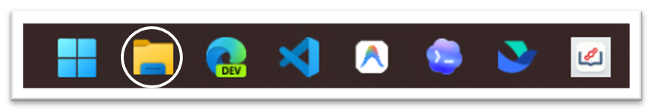
Bước 2 / 12
Truy cập ổ đĩa/thư mục
Ở cột bên trái, nhấp vào This PC, sau đó nhấp đúp vào một ổ đĩa không phải ổ hệ thống (ví dụ: ổ D: hoặc E:). Nếu chỉ có ổ C:, hãy vào thư mục Documents.
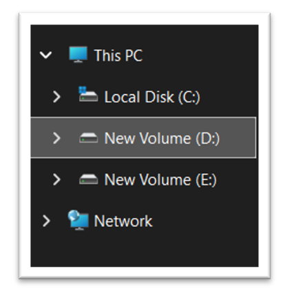
Bước 3 / 12
Tạo thư mục mới
Nhấp chuột phải vào một khoảng trống -> chọn New -> Folder. Đặt tên thư mục là ThucHanh_hotensinhvien (ví dụ: ThucHanh_NguyenVanA). Nhấn Enter.
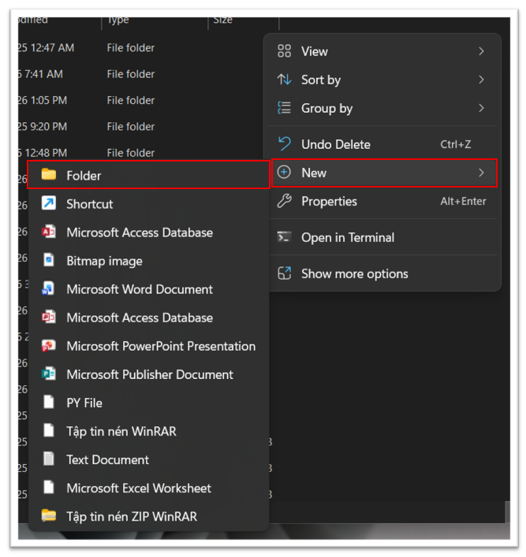
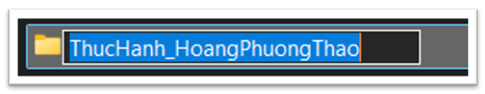
Bước 4 / 12
Vào thư mục vừa tạo
Nhấp đúp vào thư mục ThucHanh_NguyenVanA.
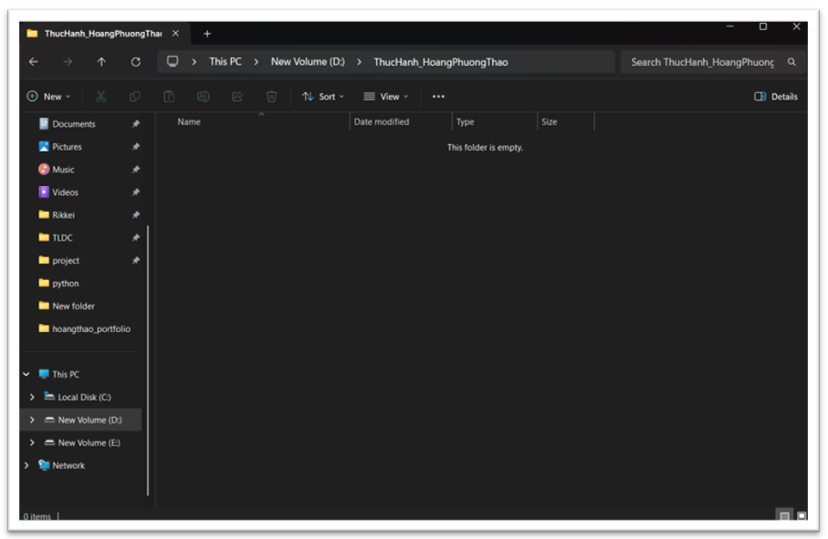
Bước 5 / 12
Tạo tệp tin văn bản
Nhấp chuột phải vào khoảng trống -> New -> Text Document. Đặt tên là GhiChu.txt. Nhấn Enter.
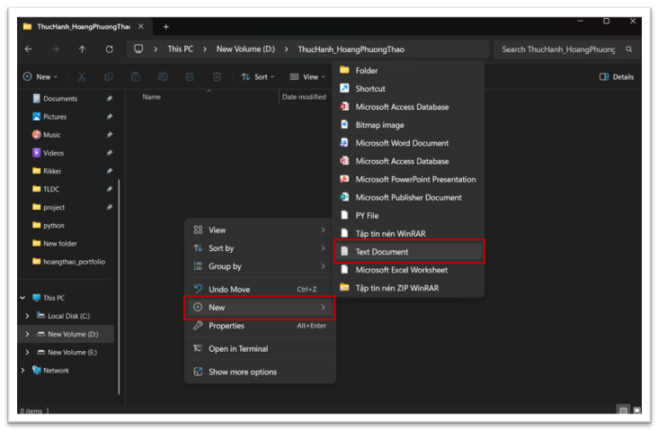
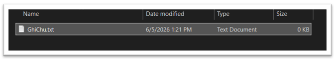
Bước 6 / 12
Đổi tên tệp tin
Nhấp chuột phải vào tệp GhiChu.txt -> chọn Rename. Đổi tên thành GhiChuQuanTrong.txt. Nhấn Enter.
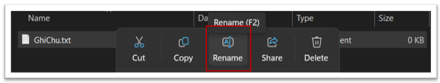
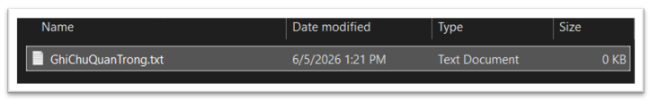
Bước 7 / 12
Tạo thư mục con
Trong thư mục ThucHanh_NguyenVanA, nhấp chuột phải -> New -> Folder. Đặt tên là TaiLieu.
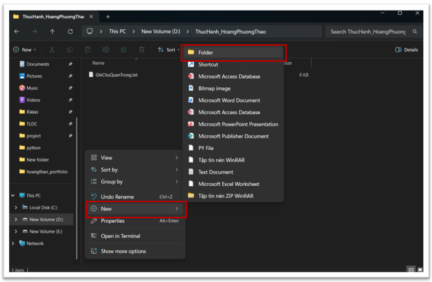
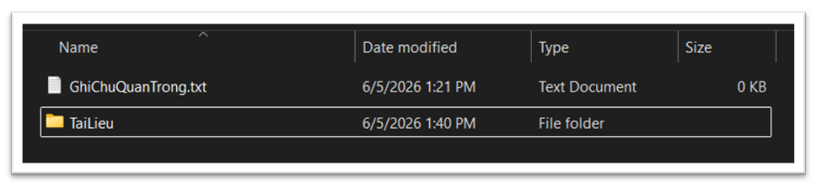
Bước 8 / 12
Sao chép tệp tin (Copy & Paste)
Nhấp chuột phải vào tệp GhiChuQuanTrong.txt -> chọn Copy (hoặc chọn tệp rồi nhấn Ctrl + C). Nhấp đúp vào thư mục TaiLieu, nhấp chuột phải vào khoảng trống bên trong -> chọn Paste (hoặc nhấn Ctrl + V). Bây giờ bạn có một bản sao của tệp trong thư mục TaiLieu.
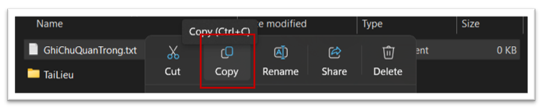
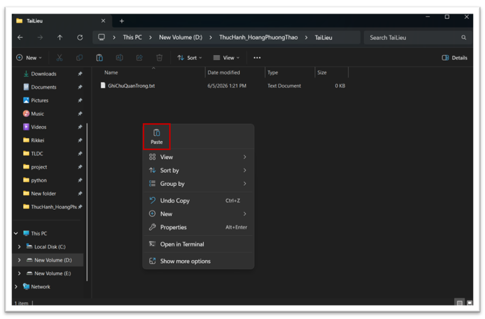
Bước 9 / 12
Di chuyển tệp tin (Cut & Paste)
Quay lại thư mục ThucHanh_NguyenVanA. Tạo một tệp với tên là DiChuyen.txt. Nhấp chuột phải vào tệp DiChuyen.txt -> chọn Cut (hoặc chọn tệp rồi nhấn Ctrl + X). Nhấp đúp vào thư mục TaiLieu, nhấp chuột phải vào khoảng trống -> chọn Paste (hoặc nhấn Ctrl + V). Tệp gốc đã biến mất khỏi vị trí cũ và chỉ còn ở vị trí mới.
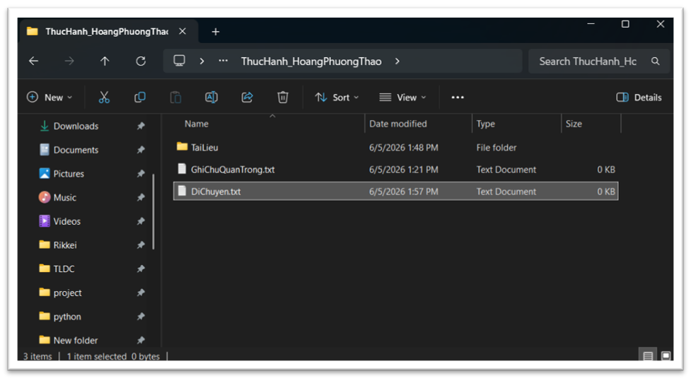
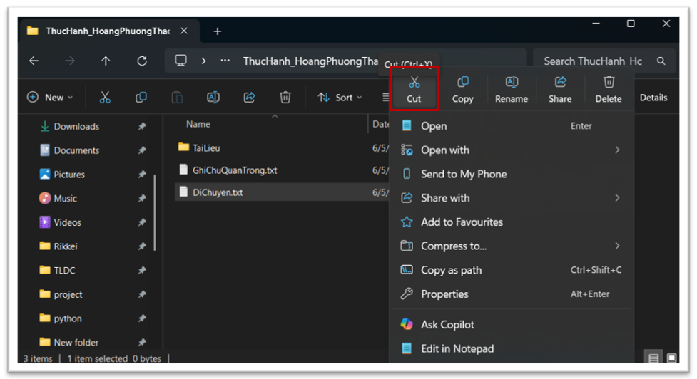
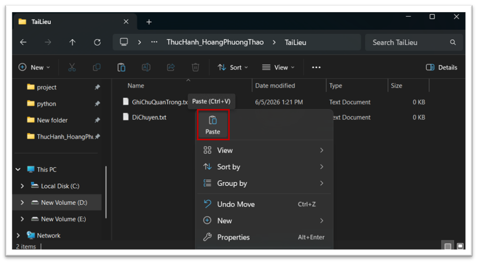
Bước 10 / 12
Xóa tệp tin
Trong thư mục TaiLieu, nhấp chuột phải vào tệp GhiChuQuanTrong.txt -> chọn Delete. Tệp sẽ được chuyển vào Thùng rác (Recycle Bin).
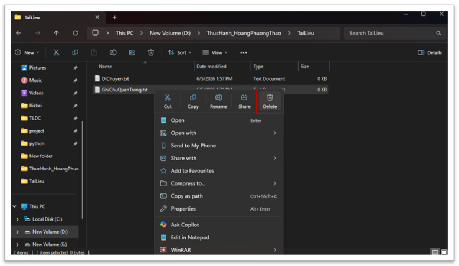
Bước 11 / 12
Xóa vĩnh viễn
Chọn tệp DiChuyen.txt, nhấn giữ phím Shift và nhấn phím Delete. Một cảnh báo sẽ hiện ra. Nếu đồng ý, tệp sẽ bị xóa vĩnh viễn mà không qua Thùng rác.
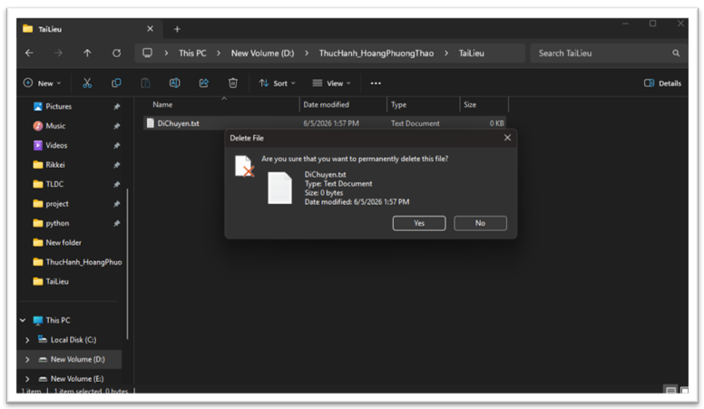
Bước 12 / 12
Khôi phục từ Thùng rác (Tùy chọn)
Tìm biểu tượng Recycle Bin trên màn hình nền, nhấp đúp để mở. Tìm tệp GhiChuQuanTrong.txt đã xóa, nhấp chuột phải vào nó và chọn Restore. Tệp sẽ quay trở lại vị trí ban đầu.
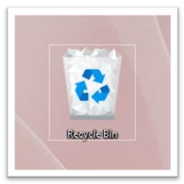
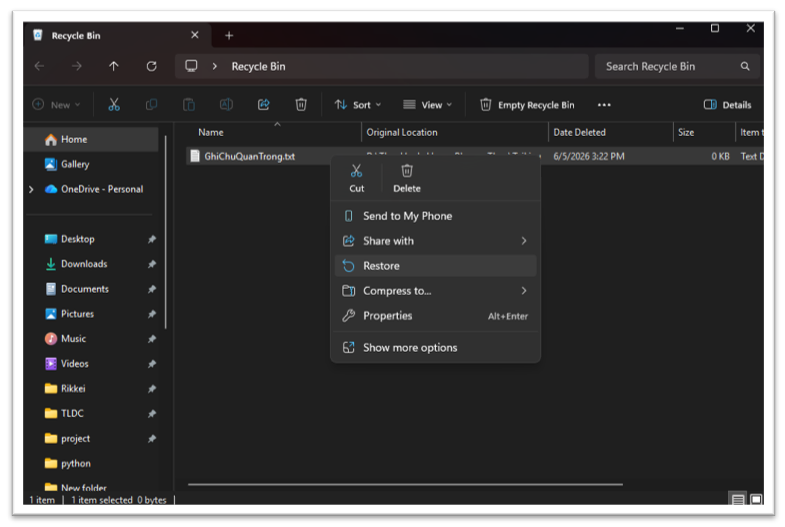
Chương 2 — Bài tập 2.4
Tìm kiếm và Đánh giá Thông tin Học thuật
Mục tiêu:Sử dụng các toán tử tìm kiếm nâng cao (Search Operators) để tìm kiếm các văn bản luật, công trình khoa học pháp lý và xây dựng bảng tiêu chí đánh giá nguồn tin đáng tin cậy.
Mục lục báo cáo
1. Giới thiệu chủ đề
2. Phương pháp tìm kiếm
3. Đánh giá nguồn tin (CRAAP)
4. Tài liệu tham khảo (Harvard)
BÁO CÁO
Chủ đề: Miễn trách nhiệm hình sự trong pháp luật Việt Nam
1. Giới thiệu chủ đề
Miễn trách nhiệm hình sự là một chế định quan trọng trong pháp luật hình sự Việt Nam, thể hiện tính nhân đạo và linh hoạt của Nhà nước trong xử lý tội phạm. Thay vì áp dụng hình phạt trong mọi trường hợp, pháp luật cho phép miễn trách nhiệm hình sự khi người phạm tội đáp ứng các điều kiện nhất định.
Việc nghiên cứu chủ đề này giúp hiểu rõ chính sách hình sự của Nhà nước và cách áp dụng pháp luật trong thực tiễn.
2. Phương pháp tìm kiếm tài liệu
Tài liệu được thu thập từ các nguồn sau:
Cơ sở dữ liệu học thuật (Google Scholar, thư viện trường)
Tạp chí khoa học chuyên ngành luật
Sách chuyên khảo
Có nguồn rõ ràng
Nội dung liên quan trực tiếp
Có giá trị học thuật
Được trích dẫn trong nghiên cứu khác
Tổng số tài liệu thu thập: 10 tài liệu, trong đó có hơn 5 bài báo khoa học.
3. Đánh giá nguồn thông tin
Các nguồn tài liệu được đánh giá dựa trên:
Uy tín tác giả
Nơi xuất bản
Phương pháp nghiên cứu
Tính cập nhật
Nhận xét:
Văn bản pháp luật và giáo trình có độ tin cậy cao nhất
Bài báo khoa học có giá trị phân tích chuyên sâu
Nguồn internet cần chọn lọc, ưu tiên trang chính thống
STT
Tài liệu
Loại
Nội dung chính
Độ tin cậy
Nhận xét
1
BLHS 2015
Văn bản
Quy định miễn TNHS
Rất cao
Nguồn chính
2
Giáo trình Luật HS
Sách
Lý luận cơ bản
Rất cao
Chuẩn học thuật
3
Nguyễn Ngọc Hòa (2018)
Sách
Phân tích miễn TNHS
Cao
Chuyên sâu
4
Tạp chí Luật học
Bài báo
Nghiên cứu pháp lý
Cao
Có phản biện
5
Tạp chí NN & PL
Bài báo
Chính sách hình sự
Cao
Uy tín
6
Google Scholar
Bài khoa học
Nghiên cứu quốc tế
Cao
Đa dạng
7
Microsoft Academic
Bài khoa học
Lý thuyết
Cao
Đáng tin
8
Bộ Tư pháp
Internet
Thông tin pháp luật
Cao
Chính thống
9
PDF nghiên cứu
Internet
Case study
TB - Cao
Cần chọn lọc
10
Wikipedia
Internet
Tổng quan
Trung bình
Tham khảo
5. NHẬN XÉT NGẮN
Các nguồn tài liệu được lựa chọn đảm bảo độ tin cậy và đa dạng. Nguồn học thuật chiếm tỷ lệ lớn, giúp nâng cao chất lượng nghiên cứu. Tuy nhiên, một số nguồn internet cần được kiểm chứng trước khi sử dụng.
TÀI LIỆU THAM KHẢO (HARVARD)
Quốc hội (2015), Bộ luật hình sự 2015, Hà Nội.
Trường Đại học Luật Hà Nội (2020), Giáo trình Luật hình sự Việt Nam, NXB Công an nhân dân.
Nguyễn Ngọc Hòa (2018), Miễn trách nhiệm hình sự trong luật Việt Nam, NXB Tư pháp.
Trần Văn Độ (2019), “Chế định miễn trách nhiệm hình sự”, Tạp chí Luật học.
Lê Cảm (2017), “Chính sách hình sự Việt Nam”, Tạp chí Nhà nước và Pháp luật.
Smith, J. (2018), Criminal Law Theory, Oxford University Press.
Google Scholar (2024), Criminal liability exemption studies.
Microsoft Academic (2023), Legal responsibility research.
Bộ Tư pháp (2024), Thông tin pháp luật, www.moj.gov.vn
Nguyen, T. (2020), “Exemption in criminal law”, Journal of Legal Studies.
Chương 3 — Bài tập 3.4
Thiết kế Prompt AI cho Học tập & Nghiên cứu Luật
Mục tiêu:Học cách chuyển đổi từ các câu hỏi cơ bản sang cấu trúc Prompt chuyên sâu (sử dụng bối cảnh, vai trò, hạn chế, phương pháp IRAC) để nhận phản hồi phân tích pháp lý chính xác từ AI.
Thực nghiệm và So sánh các cấp độ viết Prompt
Nhấp chọn các mức độ Prompt dưới đây để xem sự khác biệt về chất lượng câu lệnh và phản hồi thực tế từ AI:
* Đặc điểm kết quả:
-Câu hỏi ngắn, thiên về lý thuyết
-Chủ yếu dạng: “Trình bày…”, “Nêu khái niệm…”
-Ít chiều sâu, ít tình huống
* Đánh giá:
-Dễ hiểu, nhanh
-Không giúp luyện tư duy pháp lý
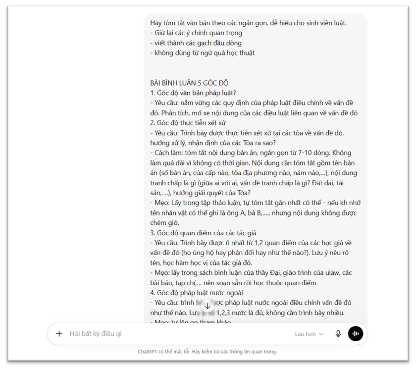
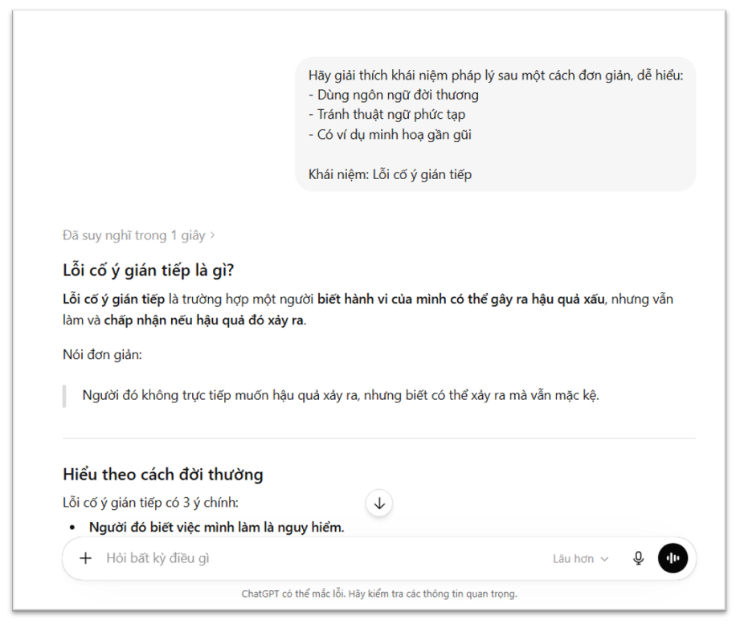
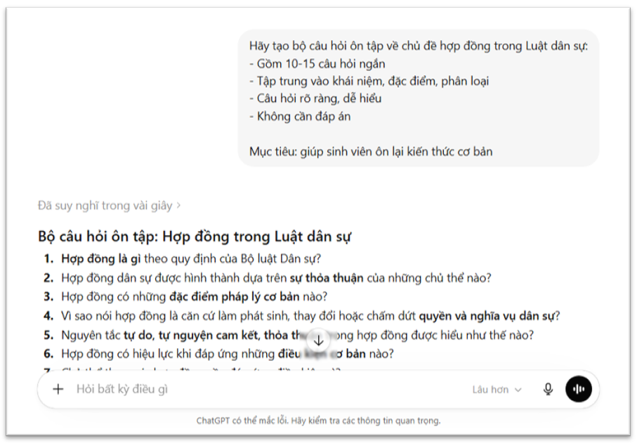
Hình ảnh minh họa
* Đặc điểm kết quả:
-Có cả câu tự luận + tình huống
-Bao quát nhiều nội dung (giao kết, hiệu lực, chấm dứt…)
-Có đáp án → dễ tự học
* Đánh giá:
-Cân bằng giữa lý thuyết và thực hành
-Bắt đầu có tư duy phân tích
-Chưa thật sự “đánh đố” như đề thi khó
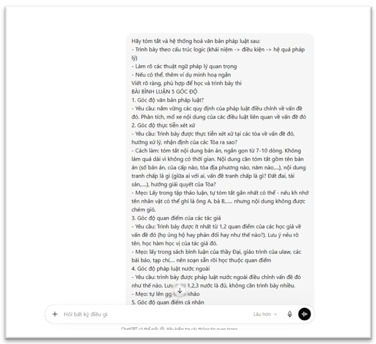
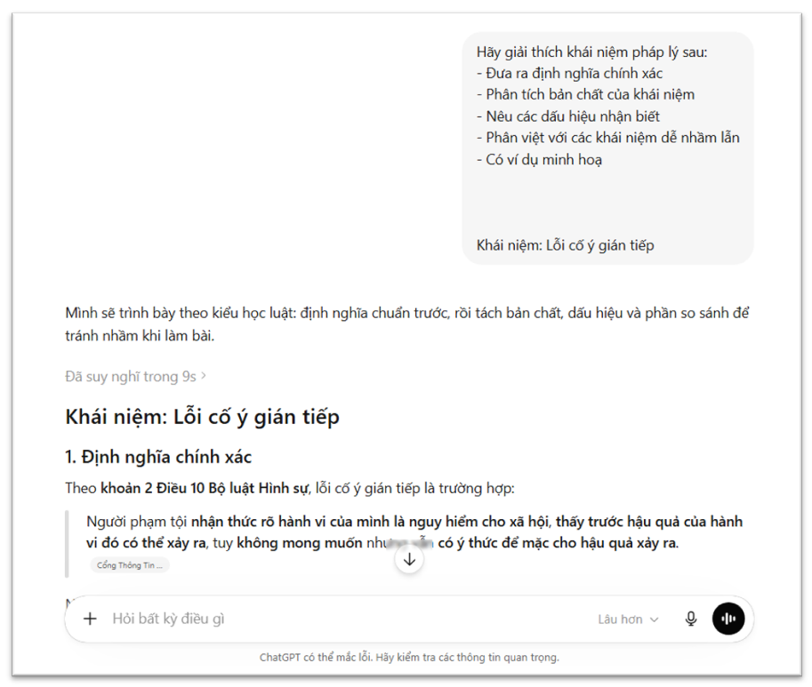
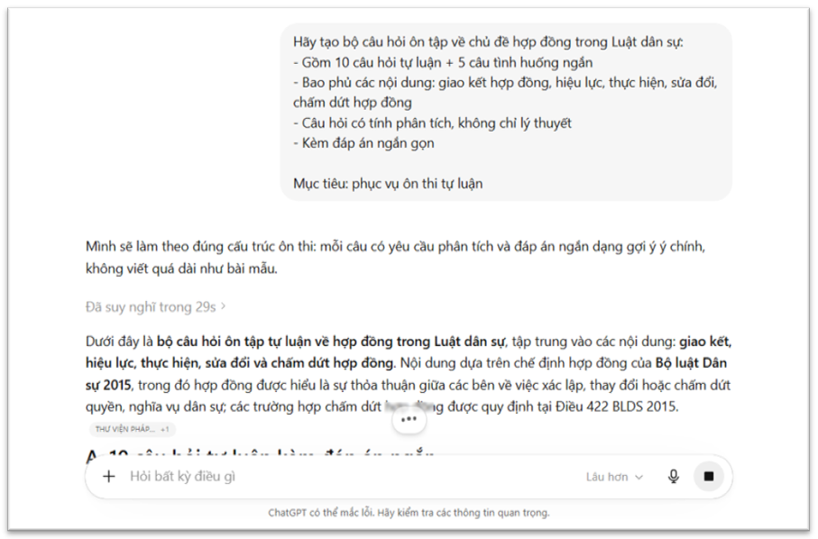
Hình ảnh minh họa
* Đặc điểm kết quả:
-Có câu hỏi so sánh, phân tích sâu
-Tình huống dài, có thể áp dụng IRAC
-Đáp án lập luận chặt chẽ
* Đánh giá:
-Rất sát đề thi thật
-Phân loại được sinh viên
-Khó, mất thời gian nếu chưa có nền
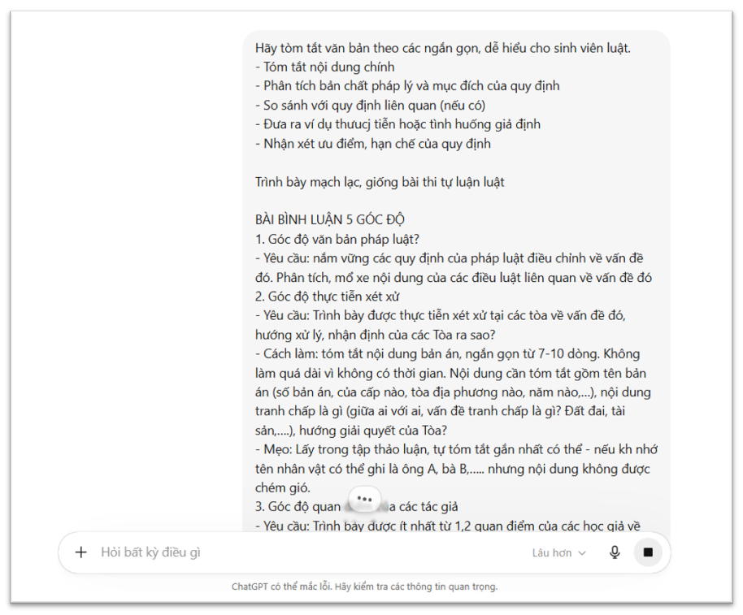
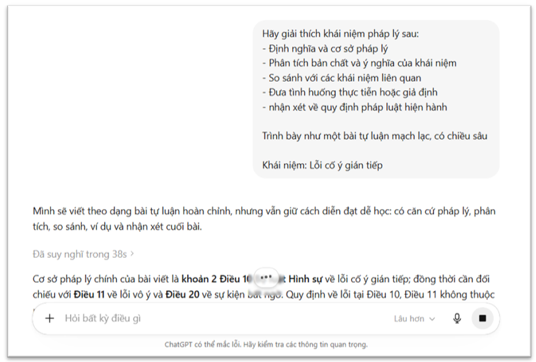
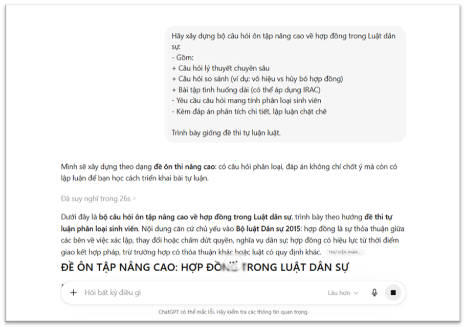
Hình ảnh minh họa
Phân tích lý do sự khác biệt+
Sự khác biệt về chất lượng đầu ra giữa các prompt xuất phát chủ yếu từ mức độ cụ thể và định hướng mà mỗi prompt đưa ra. Prompt cơ bản chỉ nêu yêu cầu chung nên mô hình không có đủ thông tin để xác định rõ mục tiêu, dẫn đến việc tạo ra các câu hỏi mang tính an toàn, thiên về lý thuyết và thiếu chiều sâu. Trong khi đó, prompt cải tiến đã bổ sung các yếu tố như số lượng, loại câu hỏi và phạm vi nội dung, giúp mô hình hiểu rõ hơn yêu cầu và tạo ra kết quả có tính hệ thống hơn. Đối với prompt nâng cao, việc đưa ra các yêu cầu về tư duy như phân tích, áp dụng tình huống và định hướng học thuật đã khiến mô hình tạo ra nội dung có độ khó và chiều sâu cao hơn, phù hợp với mục tiêu luyện thi và phân loại sinh viên.
Nguyên tắc viết prompt hiệu quả+
Từ kết quả thực nghiệm, có thể rút ra một số nguyên tắc quan trọng khi viết prompt. Trước hết, cần cụ thể hóa yêu cầu thay vì diễn đạt chung chung, bao gồm việc xác định rõ nội dung, số lượng và hình thức đầu ra. Thứ hai, phải xác định mục tiêu sử dụng của prompt như ôn tập, luyện thi hay kiểm tra kiến thức, từ đó điều chỉnh cách đặt yêu cầu cho phù hợp. Thứ ba, nên quy định rõ mức độ tư duy mong muốn như nhận biết, phân tích hay vận dụng để định hướng chất lượng nội dung. Ngoài ra, việc cung cấp bối cảnh như chương học hoặc văn bản pháp luật liên quan cũng giúp kết quả sát với nhu cầu thực tế hơn.
Mẹo viết prompt hiệu quả+
Bên cạnh các nguyên tắc trên, có thể áp dụng một số mẹo thực tiễn để nâng cao hiệu quả của prompt. Cụ thể, nên viết prompt theo dạng giống đề bài trong thực tế để mô hình dễ hiểu yêu cầu, sử dụng câu chữ rõ ràng và không ngại trình bày chi tiết. Đồng thời, luôn yêu cầu cách trình bày mạch lạc, logic để đảm bảo chất lượng đầu ra. Nếu muốn nội dung có chiều sâu hơn, có thể bổ sung các cụm từ như “theo hướng học thuật”, “có tính phân loại sinh viên” hoặc “áp dụng vào tình huống thực tiễn” để định hướng rõ ràng hơn cho mô hình.
Kết luận+
Tóm lại, hiệu quả của một prompt phụ thuộc trực tiếp vào mức độ cụ thể và định hướng mà người viết đưa ra. Prompt càng rõ ràng, chi tiết và có mục tiêu cụ thể thì kết quả đầu ra càng có chất lượng cao, phù hợp với yêu cầu học tập và thi cử. Ngược lại, prompt chung chung sẽ chỉ tạo ra nội dung ở mức cơ bản và ít giá trị ứng dụng.
Chương 4 — Bài tập 4.4
Sử dụng Công cụ Hợp tác Trực tuyến cho Dự án Nhóm
Mục tiêu:Thiết lập và quản lý các luồng công việc của nhóm bằng các công cụ trực tuyến (Trello/Notion), nâng cao kỹ năng điều hành và phân chia công việc trong môi trường số.
Quy trình phối hợp và Phân chia công việc pháp lý
Trong bài tập nhóm này, chúng tôi đã sử dụng mô hình quản lý dự án Agile/Kanban để điều hành đề tài nghiên cứu pháp luật về "Bảo vệ thông tin cá nhân trên môi trường mạng". Bảng công việc trực quan giúp tối ưu hóa tiến độ:
Cần làm (To Do)
Nghiên cứu
Thu thập tài liệu luật so sánh quốc tế (GDPR)
Đang làm (In Progress)
Viết nội dung
Viết dự thảo chương 2: Thực trạng tại Việt Nam
Hoàn thành (Done)
Thiết kế
Tạo Outline báo cáo & Phân chia phần công việc
Nhật ký Minh chứng Quy trình Hợp tác Nhóm
Nhấn nút "Trước" / "Sau" để kiểm tra từng tài liệu cộng tác thực tế của nhóm (Bấm vào ảnh để xem kích thước lớn):
Bước 1 / 9
Khởi tạo không gian làm việc số
Thiết lập kênh làm việc chung của nhóm trên Microsoft Teams để thảo luận và lưu trữ dữ liệu dự án.
Bước 2 / 9
Lập Kế hoạch & Phân công
Phác thảo phân vai nhiệm vụ chi tiết và cập nhật thời hạn hoàn thành lên hệ thống quản lý công việc.
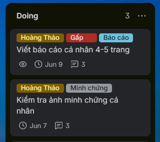
Bước 3 / 9
Trao đổi & Thảo luận Ý tưởng
Họp thảo luận nhóm, đưa ra đề tài và các toán tử tìm kiếm cần thiết cho bài tập.
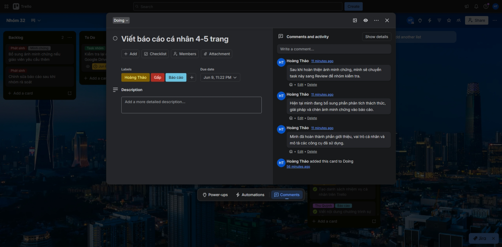
Bước 4 / 9
Đồng soạn thảo báo cáo (Co-authoring)
Viết báo cáo trực tuyến trên Microsoft Word. Các thành viên cùng thảo luận và chỉnh sửa thời gian thực.
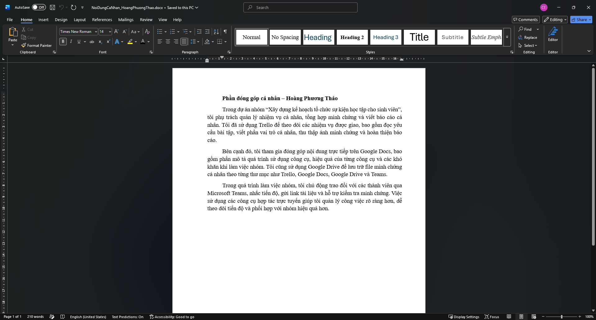
Bước 5 / 9
Xây dựng và Phản biện nội dung
Đưa nội dung chi tiết vào các chương, bảo đảm tính học thuật và cấu trúc logic chặt chẽ.
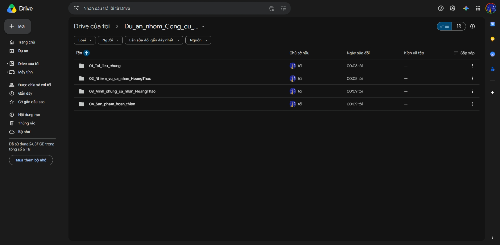
Bước 6 / 9
Kiểm tra lịch sử đóng góp
Theo dõi và đánh giá tỉ lệ tham gia đóng góp thực tế của từng thành viên thông qua lịch sử chỉnh sửa đám mây.
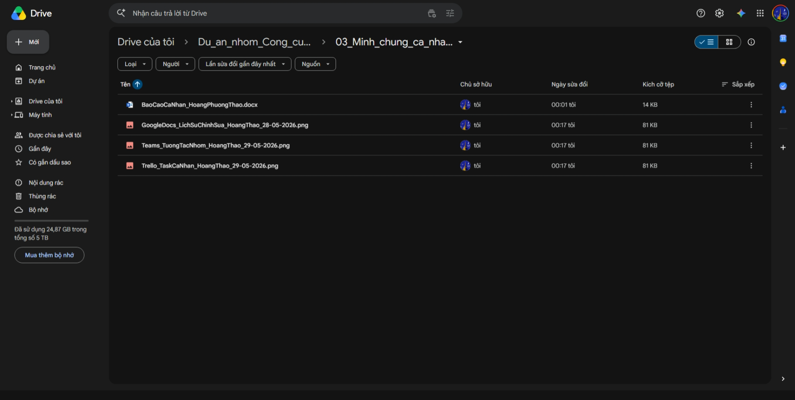
Bước 7 / 9
Soát lỗi & Định dạng văn bản
Căn lề chuẩn văn bản học thuật và kiểm tra chéo các phần tài liệu tham khảo theo quy tắc.
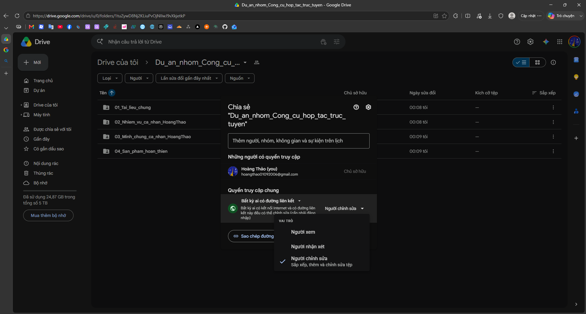
Bước 8 / 9
Rà soát toàn diện trước khi nộp
Nhóm trưởng kiểm tra tổng thể nội dung, văn phong pháp lý và sự chuẩn mực của sản phẩm cuối cùng.
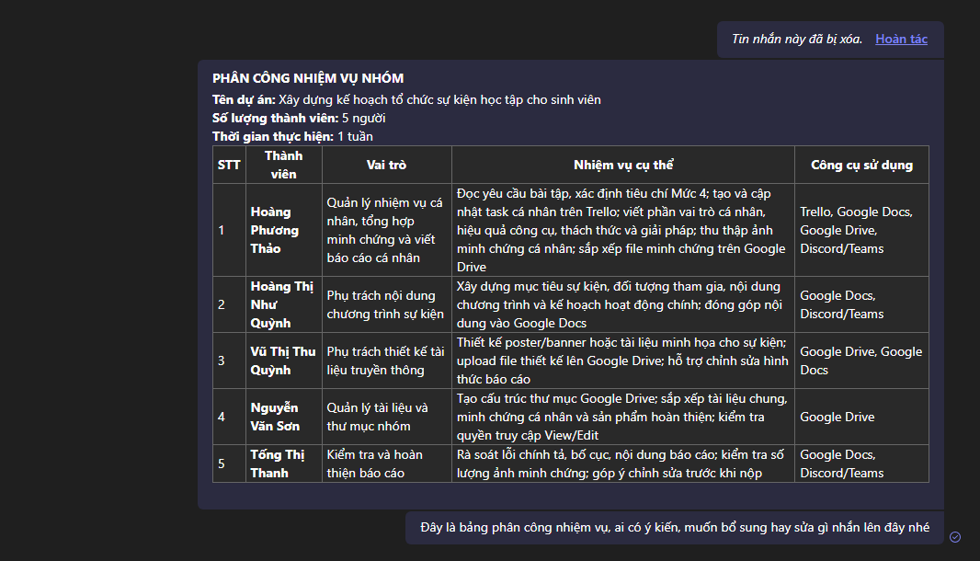
Bước 9 / 9
Nộp bài hoàn thiện lên LMS
Trưởng nhóm tiến hành tải sản phẩm lên cổng nộp bài Teams/LMS của môn học đúng thời hạn.
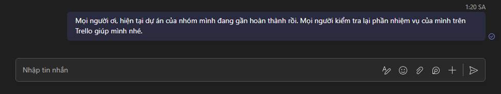
Chương 5 — Bài tập 5.4
Sử dụng AI Tạo Sinh hỗ trợ Sáng tạo Nội dung Số
Mục tiêu:Tự tay xây dựng sản phẩm truyền thông học thuật hoàn chỉnh (Infographic) bằng cách tích hợp và chỉ đạo các công cụ AI (ChatGPT, Bing DALL-E, Nano Banana).
I. Giới thiệu dự án
II. Các công cụ AI đã sử dụng
III. Mô tả sản phẩm
IV. Quá trình sử dụng AI
V. Các phiên bản trung gian
VI. So sánh & Phân tích
VII. Vai trò của AI
VIII. Điểm tốt & Hạn chế
IX. Các vấn đề đạo đức
X. Tỉ lệ đóng góp
XI. Kết luận
BÁO CÁO DỰ ÁN SÁNG TẠO NỘI DUNG SỐ BẰNG CÔNG CỤ AI TẠO SINH
Thông tin sinh viên
Họ và tên: Hoàng Phương Thảo
Mã sinh viên: 24061610
Lớp: VNU1001_E252034
Môn học: Nhập môn công nghệ số và ứng dụng trí tuệ nhân tạo
Tên bài tập: Sử dụng công cụ AI tạo sinh trong sáng tạo nội dung số
I. Giới thiệu dự án
Trong bài tập này, em lựa chọn thực hiện một sản phẩm sáng tạo nội dung số dưới dạng infographic với chủ đề: “Ứng dụng AI trong học tập của sinh viên”
II. Các công cụ AI đã sử dụng
Trong dự án này, em sử dụng ba nhóm công cụ AI tạo sinh theo đúng yêu cầu của đề bài.
STT
Công cụ AI
Nhóm công cụ
Vai trò trong dự án
1
ChatGPT
AI tạo văn bản
Hỗ trợ lên ý tưởng, đề xuất bố cục, viết nội dung nháp cho infographic và hỗ trợ viết báo cáo
2
Nano Banana AI
AI tạo hình ảnh
Tạo hình ảnh minh họa liên quan đến sinh viên, học tập và công nghệ AI
3
Bing Image Creator / DALL-E
AI hỗ trợ thiết kế
Gợi ý mẫu thiết kế, bố cục, biểu tượng, màu sắc và hỗ trợ hoàn thiện infographic
Việc kết hợp ba công cụ này giúp quá trình sáng tạo được chia thành nhiều giai đoạn rõ ràng. ChatGPT đảm nhiệm phần nội dung, công cụ tạo ảnh đảm nhiệm phần hình ảnh minh họa, còn Bing Image Creator / DALL-E hỗ trợ phần trình bày và thiết kế trực quan.
III. Mô tả sản phẩm cuối cùng
Sản phẩm cuối cùng là một infographic có chủ đề:
“Ứng dụng AI trong học tập của sinh viên”
Infographic được thiết kế theo phong cách hiện đại, sử dụng màu sắc chủ đạo là xanh dương, trắng và tím nhạt để tạo cảm giác công nghệ, trẻ trung và dễ nhìn. Nội dung infographic được chia thành 5 phần chính:
AI là gì? Giới thiệu ngắn gọn về trí tuệ nhân tạo và vai trò của AI trong học tập.
Lợi ích của AI trong học tập Trình bày các lợi ích như hỗ trợ tìm kiếm thông tin, giải thích kiến thức khó, gợi ý ý tưởng, tóm tắt tài liệu và hỗ trợ luyện tập.
Hạn chế khi sử dụng AI Nêu các vấn đề như thông tin có thể sai, nội dung đôi khi chung chung, dễ gây phụ thuộc và thiếu tư duy phản biện nếu sử dụng không đúng cách.
Cách sử dụng AI hiệu quả Đưa ra các lời khuyên như viết prompt rõ ràng, kiểm tra lại thông tin, chỉnh sửa kết quả AI và kết hợp với kiến thức cá nhân.
Lưu ý đạo đức Nhấn mạnh việc không sao chép nguyên văn, không gian lận học tập, cần ghi nhận vai trò của AI và sử dụng AI như một công cụ hỗ trợ thay thế hoàn toàn con người.
Sản phẩm hướng đến đối tượng người xem là sinh viên, đặc biệt là những người đang bắt đầu sử dụng AI trong học tập. Vì vậy, nội dung được trình bày ngắn gọn, dễ hiểu, có hình ảnh minh họa và biểu tượng trực quan.
IV. Quá trình sử dụng AI trong sáng tạo sản phẩm
1. Sử dụng ChatGPT để lên ý tưởng và xây dựng nội dung
Ở giai đoạn đầu, em sử dụng ChatGPT để tìm ý tưởng tổng thể cho infographic. Mục tiêu là có được một cấu trúc nội dung rõ ràng, phù hợp với chủ đề và dễ triển khai thành thiết kế trực quan.
Prompt 1: Yêu cầu ChatGPT đề xuất ý tưởng infographic
Prompt đã sử dụng:
Hãy đóng vai một chuyên gia sáng tạo nội dung số. Tôi cần làm một infographic với chủ đề “Ứng dụng AI trong học tập của sinh viên”. Hãy đề xuất cho tôi cấu trúc nội dung phù hợp, gồm tiêu đề chính, các mục nhỏ, nội dung ngắn gọn cho từng mục và gợi ý phong cách thiết kế. Nội dung cần dễ hiểu, phù hợp với sinh viên, có tính giáo dục và có thể trình bày trên một infographic một trang.
Kết quả nhận được:
ChatGPT đề xuất infographic gồm các phần chính: Tìm kiếm & tổng hợp kiến thức, Hỗ trợ viết bài & lập dàn ý, Cá nhân hóa việc học, Luyện tập & kiểm tra kiến thức, Quản lý thời gian học tập, Học ngoại ngữ hiệu quả hơn, Lưu ý khi sử dụng AI. Ngoài ra, ChatGPT cũng gợi ý sử dụng phong cách thiết kế hiện đại, trẻ trung, bố cục một trang, dễ đọc, không quá nhiều chữ, ưu tiên biểu tượng minh họa thay vì đoạn văn dài. Nền sáng: trắng, xanh nhạt hoặc tím nhạt. Màu chủ đạo: xanh dương, tím, xanh mint. Màu nhấn: vàng hoặc cam cho các ý quan trọng.
Cách chỉnh sửa và tích hợp:
Sau khi nhận được kết quả, em không sử dụng nguyên văn toàn bộ nội dung mà chọn lọc lại các ý phù hợp nhất. Một số phần do ChatGPT viết còn dài, vì vậy em rút gọn thành các câu ngắn để phù hợp với infographic. Ví dụ, phần “AI giúp sinh viên tiếp cận tri thức nhanh hơn thông qua khả năng tổng hợp và giải thích thông tin” được em chỉnh thành “AI giúp tìm thông tin, tóm tắt tài liệu và giải thích kiến thức nhanh hơn”.
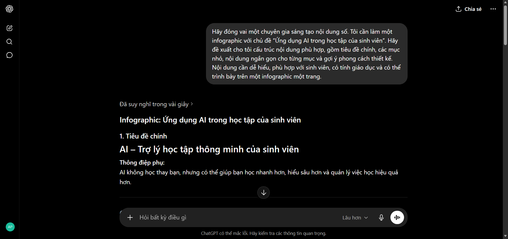
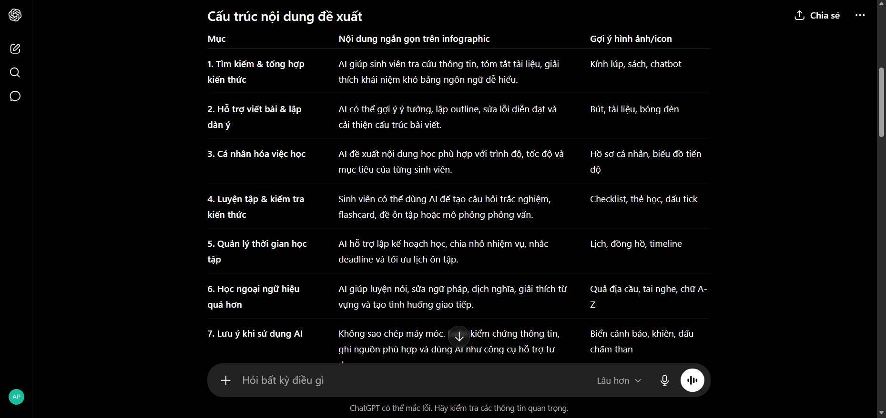
*Ảnh chụp màn hình prompt và kết quả ChatGPT đề xuất ý tưởng infographic*
Prompt 2: Yêu cầu ChatGPT viết nội dung ngắn gọn cho infographic
Prompt đã sử dụng:
Hãy viết nội dung ngắn gọn cho một infographic chủ đề “Ứng dụng AI trong học tập của sinh viên”. Nội dung gồm 5 phần: AI là gì, lợi ích, hạn chế, cách sử dụng hiệu quả và lưu ý đạo đức. Mỗi phần chỉ viết 3-5 ý ngắn, dễ đọc, phù hợp để đưa vào thiết kế infographic. Ngôn ngữ cần tự nhiên, dễ hiểu, không quá học thuật.
Kết quả nhận được:
ChatGPT tạo ra nội dung dạng gạch đầu dòng cho từng phần. Nội dung bao gồm các ý như: AI là gì?, lợi ích của AI, hạn chế của AI, cách sử dụng hiệu quả, lưu ý đạo đức; hạn chế là có thể đưa ra thông tin chưa chính xác, dễ khiến người học phụ thuộc; lời khuyên là cần kiểm chứng thông tin, đặt câu hỏi rõ ràng và tự chỉnh sửa lại kết quả.
Cách chỉnh sửa và tích hợp:
Em tiếp tục chỉnh sửa nội dung để phù hợp với bố cục thực tế của infographic. Một số câu được rút ngắn để tránh quá nhiều chữ. Em cũng thêm một số ý cá nhân, chẳng hạn như “AI không thay thế việc tự học” và “Sinh viên cần dùng AI như một trợ lý học tập”. Đây là những ý do em tự bổ sung để sản phẩm có quan điểm rõ ràng hơn.
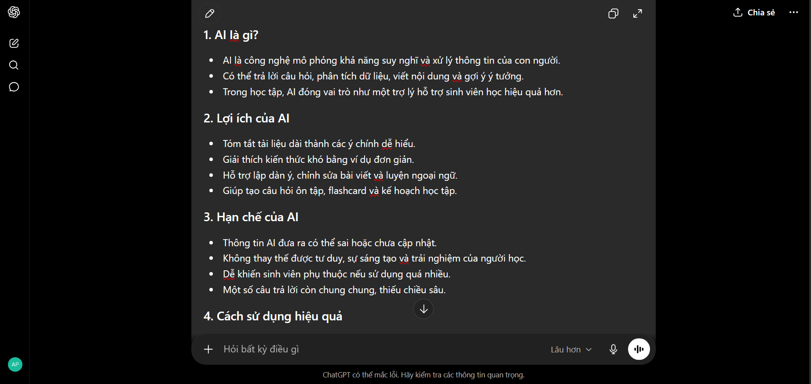
Ảnh chụp màn hình ChatGPT tạo nội dung chi tiết cho infographic
2. Sử dụng AI tạo hình ảnh để tạo minh họa
Sau khi có nội dung chính, em sử dụng công cụ AI tạo hình ảnh để tạo hình minh họa cho infographic. Mục tiêu là tạo ra hình ảnh thể hiện sự kết hợp giữa sinh viên, học tập và công nghệ AI.
Công cụ được sử dụng là Nano Banana AI.
Prompt 3: Tạo hình minh họa chính cho infographic
Prompt đã sử dụng:
Create a modern digital illustration of a Vietnamese university student using artificial intelligence for studying. The student is sitting at a desk with a laptop, books, notebooks, and a glowing AI assistant interface on the screen. The atmosphere should feel positive, creative, and educational. Use a clean modern style, soft blue and purple colors, suitable for an infographic about AI in education. No text in the image.
Kết quả nhận được:
Công cụ tạo ảnh đã tạo ra một số hình ảnh minh họa sinh viên đang học với máy tính, xung quanh có các biểu tượng công nghệ, sách vở và ánh sáng thể hiện yếu tố AI. Một số ảnh có bố cục khá đẹp, màu sắc phù hợp với phong cách hiện đại và có thể dùng làm hình minh họa chính cho infographic.
Cách chỉnh sửa và tích hợp:
Trong các kết quả được tạo ra, em chọn hình ảnh có bố cục rõ ràng nhất và không chứa chữ bị lỗi. Sau đó, em đưa hình ảnh vào Canva để cắt bớt phần thừa, điều chỉnh kích thước và đặt ở phần đầu infographic. Em cũng giảm độ nổi bật của hình ảnh để không làm rối bố cục tổng thể.
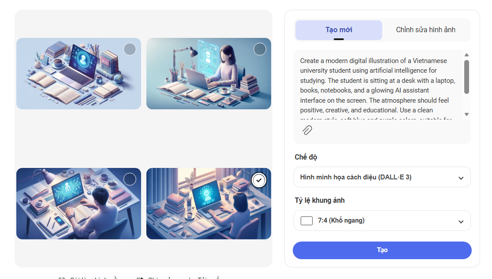
Ảnh chụp màn hình prompt tạo ảnh và kết quả hình ảnh AI tạo ra
Prompt 4: Tạo biểu tượng minh họa cho các mục nội dung
Prompt đã sử dụng:
Create a set of simple flat icons for an infographic about AI in student learning. Include icons for: idea generation, summarizing documents, explaining difficult knowledge, checking information, ethical AI use, and critical thinking. Use a clean vector style, blue and purple color palette, white background, no text.
Kết quả nhận được:
AI tạo ra một số hình ảnh dạng biểu tượng liên quan đến bóng đèn ý tưởng, tài liệu, não bộ, máy tính, dấu kiểm và biểu tượng đạo đức. Các biểu tượng có phong cách đơn giản, phù hợp để chia nhỏ nội dung infographic.
Cách chỉnh sửa và tích hợp:
Em không dùng toàn bộ biểu tượng AI tạo ra mà chỉ chọn những biểu tượng dễ hiểu, rõ nét và phù hợp với từng mục. Một số biểu tượng chưa chính xác hoặc bị thừa chi tiết nên em thay thế bằng icon có sẵn trong Canva. Điều này giúp infographic có sự thống nhất hơn về phong cách hình ảnh.
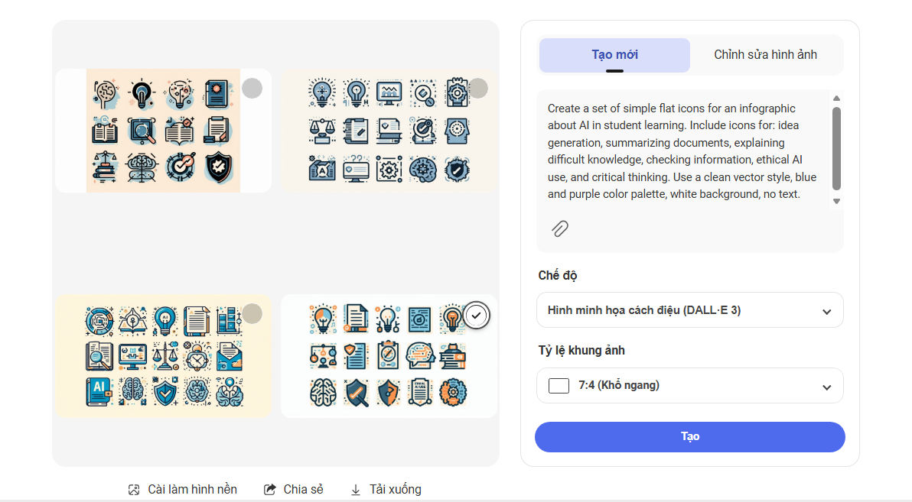
Ảnh chụp màn hình quá trình tạo icon minh họa bằng AI
3. Sử dụng Canva AI để thiết kế infographic
Sau khi có nội dung và hình ảnh minh họa, em sử dụng Bing Image Creator / DALL-E để thiết kế sản phẩm cuối cùng. Bing Image Creator / DALL-E hỗ trợ gợi ý mẫu thiết kế, bố cục, font chữ, màu sắc và các thành phần trang trí.
Prompt 5: Yêu cầu Canva AI gợi ý thiết kế infographic
Prompt đã sử dụng trong Bing Image Creator / DALL-E:
Create a one-page modern infographic in Vietnamese about “Ứng dụng AI trong học tập của sinh viên”. The design should be clean, educational, and suitable for university students. Use blue, white, and light purple colors. Include sections for definition, benefits, limitations, effective use, and ethical considerations. Use icons, clear headings, and short bullet points.
Kết quả nhận được:
Canva AI gợi ý một số mẫu infographic có bố cục dọc, chia nội dung thành nhiều khối rõ ràng. Các mẫu sử dụng màu xanh dương, tím nhạt và trắng, phù hợp với chủ đề công nghệ. Một số mẫu có sẵn icon, khung nội dung và phần tiêu đề nổi bật.
Cách chỉnh sửa và tích hợp:
Em chọn một mẫu có bố cục rõ ràng nhất, sau đó thay đổi lại nội dung theo phần đã chỉnh sửa từ ChatGPT. Em cũng thay một số icon, điều chỉnh khoảng cách giữa các khối nội dung, thay đổi kích thước chữ để dễ đọc hơn. Ngoài ra, em thêm hình ảnh minh họa được tạo từ AI vào phần đầu của infographic để tăng tính trực quan.
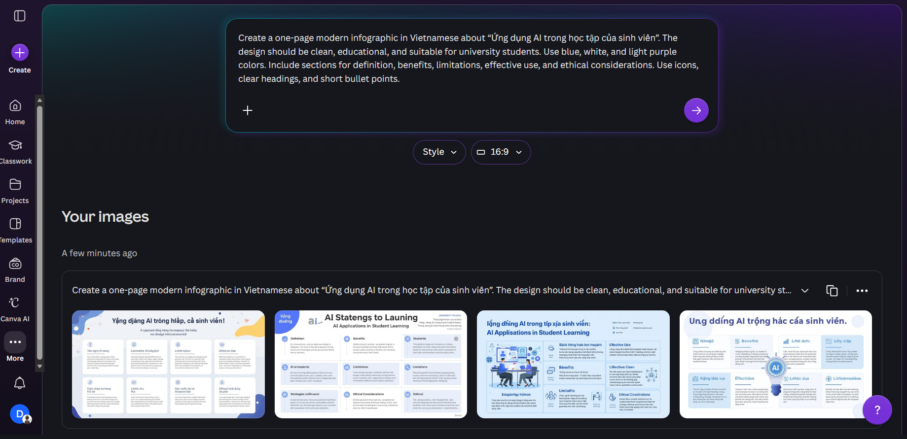
Ảnh chụp màn hình quá trình thiết kế trên Canva AI
Các chỉnh sửa cá nhân trong Canva
Rút gọn nội dung để mỗi mục không quá dài.
Sắp xếp lại thứ tự các phần để người xem dễ theo dõi.
Chọn lại font chữ rõ ràng, dễ đọc.
Điều chỉnh màu sắc chủ đạo thành xanh dương, trắng và tím nhạt.
Thay một số biểu tượng chưa phù hợp.
Căn chỉnh khoảng cách giữa các khối nội dung.
Thêm phần kết luận ngắn ở cuối infographic: “AI là công cụ hỗ trợ, không thay thế tư duy của sinh viên.”
Kiểm tra lỗi chính tả và sửa lại các câu chưa tự nhiên.
Nhờ quá trình chỉnh sửa này, sản phẩm cuối cùng không còn là kết quả tự động hoàn toàn từ AI mà đã có sự đóng góp cá nhân rõ ràng trong nội dung, bố cục và cách truyền tải thông điệp.
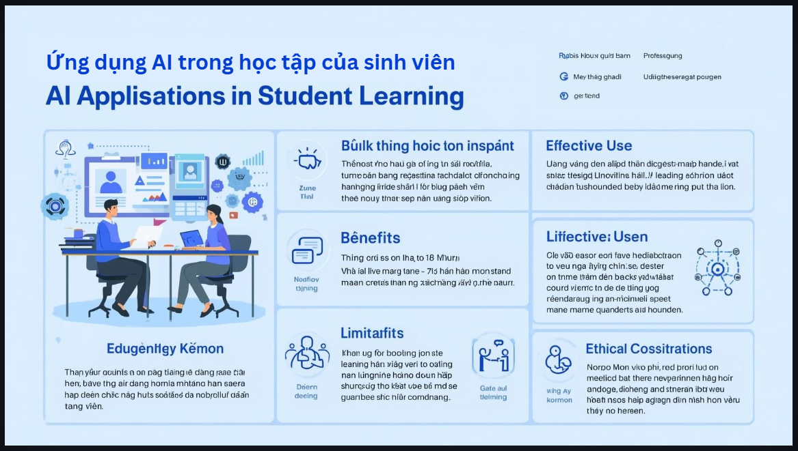
Ảnh chụp màn hình sản phẩm infographic hoàn chỉnh
V. Các phiên bản trung gian của dự án
Trong quá trình thực hiện, sản phẩm đã trải qua một số phiên bản trung gian trước khi hoàn thiện.
Phiên bản 1: Bản ý tưởng nội dung
Ở phiên bản đầu tiên, em chỉ mới có nội dung dạng gạch đầu dòng do ChatGPT hỗ trợ tạo ra. Nội dung lúc này còn khá dài và mang tính liệt kê. Một số ý chưa phù hợp để đưa trực tiếp vào infographic vì quá nhiều chữ.
Phiên bản 2: Bản nội dung đã rút gọn
Sau khi đọc lại nội dung, em rút gọn các câu dài, bỏ bớt những ý trùng lặp và sắp xếp thành 5 nhóm nội dung chính. Phiên bản này phù hợp hơn để đưa vào thiết kế vì mỗi phần chỉ còn các ý ngắn, dễ đọc.
Phiên bản 3: Bản thiết kế nháp trên Canva
Ở phiên bản này, em đưa nội dung vào mẫu infographic trên Canva. Tuy nhiên, bố cục ban đầu còn chưa cân đối, một số phần có quá nhiều chữ, hình ảnh minh họa chưa hài hòa với màu sắc chung.
Phiên bản 4: Bản hoàn chỉnh
Ở phiên bản cuối cùng, em chỉnh lại bố cục, giảm bớt chữ, thay icon phù hợp, căn chỉnh khoảng cách, bổ sung hình minh họa chính và kiểm tra lại toàn bộ nội dung. Đây là phiên bản được sử dụng làm sản phẩm cuối cùng để nộp kèm báo cáo.
VI. So sánh và phân tích hiệu quả của các công cụ AI đã sử dụng
Trong quá trình thực hiện dự án, mỗi công cụ AI có vai trò, điểm mạnh và hạn chế riêng. Việc so sánh các công cụ giúp em hiểu rõ hơn cách sử dụng AI hiệu quả trong từng giai đoạn sáng tạo.
Nội dung đôi khi chung chung, cần kiểm tra và chỉnh sửa lại
Rất hữu ích ở giai đoạn lên ý tưởng và viết nội dung
Bing Image Creator/DALL-E
Tạo hình ảnh minh họa nhanh, phong cách đa dạng, phù hợp với chủ đề sáng tạo
Một số ảnh có chi tiết chưa chính xác hoặc không đúng hoàn toàn yêu cầu
Hữu ích trong việc tạo hình ảnh minh họa
Bing Image Creator / DALL-E
Hỗ trợ thiết kế nhanh, nhiều mẫu đẹp, dễ chỉnh sửa
Bố cục AI gợi ý đôi khi chưa phù hợp hoàn toàn với nội dung cụ thể
Rất hữu ích ở giai đoạn trình bày sản phẩm
ChatGPT là công cụ hỗ trợ hiệu quả nhất trong giai đoạn đầu của dự án. Công cụ này giúp em nhanh chóng xác định được cấu trúc nội dung, các ý chính và cách trình bày thông tin. Tuy nhiên, nội dung do ChatGPT tạo ra ban đầu vẫn cần chỉnh sửa vì một số câu còn dài hoặc mang tính khái quát. Nếu đưa nguyên văn vào infographic, sản phẩm sẽ bị nhiều chữ và khó đọc.
Công cụ tạo hình ảnh như Bing Image Creator hoặc DALL-E có ưu điểm là tạo hình minh họa nhanh, có thể tùy chỉnh phong cách thông qua prompt. Khi sử dụng prompt càng chi tiết, hình ảnh tạo ra càng gần với mong muốn. Tuy nhiên, hạn chế là hình ảnh đôi khi có chi tiết chưa hợp lý, ví dụ bố cục hơi rối, nhân vật chưa tự nhiên hoặc xuất hiện chữ không rõ nghĩa. Vì vậy, em chỉ chọn những hình ảnh phù hợp nhất và chỉnh sửa lại trong Canva.
Bing Image Creator / DALL-E hỗ trợ tốt ở phần thiết kế vì có nhiều mẫu, biểu tượng và công cụ chỉnh sửa trực quan. So với việc tự thiết kế từ đầu, Canva giúp tiết kiệm thời gian đáng kể. Tuy nhiên, mẫu thiết kế do Canva gợi ý vẫn cần thay đổi để phù hợp với nội dung thực tế. Em phải tự điều chỉnh màu sắc, font chữ, khoảng cách, thứ tự nội dung và vị trí hình ảnh.
Qua quá trình so sánh, em nhận thấy không có công cụ AI nào có thể tự tạo ra sản phẩm hoàn chỉnh một cách hoàn hảo. Mỗi công cụ chỉ mạnh ở một giai đoạn nhất định. ChatGPT mạnh về ý tưởng và nội dung, công cụ tạo ảnh mạnh về minh họa, còn Bing Image Creator / DALL-E mạnh về bố cục và thiết kế. Sản phẩm cuối cùng chỉ đạt chất lượng tốt khi người dùng biết kết hợp các công cụ này một cách hợp lý và có sự chỉnh sửa cá nhân.
VII. Vai trò của AI trong quá trình sáng tạo
AI đóng vai trò quan trọng trong quá trình thực hiện dự án vì giúp em tiết kiệm thời gian, mở rộng ý tưởng và cải thiện chất lượng sản phẩm. Trước đây, khi làm một infographic, em thường phải tự tìm ý tưởng, viết nội dung, tìm hình ảnh minh họa và thiết kế bố cục từ đầu. Quá trình này mất khá nhiều thời gian, đặc biệt là ở bước lên ý tưởng và trình bày thông tin sao cho ngắn gọn. Khi sử dụng AI, em có thể nhanh chóng có được bản nháp ban đầu để phát triển tiếp.
ChatGPT giúp em hình thành cấu trúc nội dung rõ ràng. Thay vì bắt đầu từ một trang trắng, em có thể dựa trên các gợi ý của AI để xác định các mục chính cần đưa vào infographic. AI cũng hỗ trợ viết nội dung ban đầu, giúp em có nhiều lựa chọn về cách diễn đạt. Tuy nhiên, vai trò của em vẫn rất quan trọng vì em phải chọn lọc thông tin, rút gọn câu chữ và điều chỉnh nội dung cho phù hợp với mục tiêu sản phẩm.
AI tạo hình ảnh giúp quá trình minh họa trở nên thuận tiện hơn. Thay vì tìm kiếm hình ảnh có sẵn trên Internet, em có thể tạo hình ảnh theo đúng chủ đề mong muốn. Điều này giúp sản phẩm có tính riêng biệt hơn. Tuy vậy, hình ảnh do AI tạo ra không phải lúc nào cũng chính xác hoàn toàn. Một số chi tiết có thể chưa tự nhiên hoặc chưa phù hợp với phong cách thiết kế, vì vậy người dùng vẫn phải đánh giá và chỉnh sửa.
Bing Image Creator / DALL-E giúp em chuyển nội dung thành sản phẩm trực quan. Công cụ này hỗ trợ bố cục, màu sắc và biểu tượng, giúp infographic trở nên chuyên nghiệp hơn. Nhưng nếu chỉ dùng mẫu AI tạo sẵn mà không chỉnh sửa, sản phẩm có thể thiếu dấu ấn cá nhân. Vì vậy, em đã tự điều chỉnh lại nhiều yếu tố như màu sắc, vị trí nội dung, kích thước chữ và hình ảnh minh họa.
Nhìn chung, AI đã thay đổi quy trình sáng tạo của em theo hướng nhanh hơn và có tổ chức hơn. AI không thay thế hoàn toàn vai trò của con người mà đóng vai trò như một trợ lý hỗ trợ trong từng giai đoạn. Người dùng vẫn là người quyết định thông điệp, kiểm soát chất lượng, chỉnh sửa nội dung và chịu trách nhiệm với sản phẩm cuối cùng. Qua bài tập này, em nhận thấy sử dụng AI hiệu quả không phải là sao chép kết quả AI tạo ra, mà là biết đặt câu hỏi đúng, chọn lọc thông tin và kết hợp với tư duy sáng tạo cá nhân.
VIII. Những phần AI làm tốt và những phần còn hạn chế
1. Những phần AI làm tốt
AI làm tốt ở việc tạo ý tưởng ban đầu. Chỉ cần một prompt rõ ràng, ChatGPT có thể đề xuất nhiều hướng triển khai nội dung khác nhau. Điều này giúp người dùng không bị bí ý tưởng khi bắt đầu dự án.
AI cũng làm tốt ở việc tóm tắt và tổ chức thông tin. Với chủ đề “Ứng dụng AI trong học tập của sinh viên”, ChatGPT có thể chia nội dung thành các nhóm hợp lý như lợi ích, hạn chế, cách sử dụng và vấn đề đạo đức. Đây là nền tảng tốt để phát triển thành infographic.
Đối với hình ảnh, công cụ tạo ảnh AI có thể tạo ra hình minh họa nhanh chóng, phù hợp với mô tả trong prompt. Điều này giúp sản phẩm có hình ảnh riêng thay vì chỉ sử dụng các ảnh có sẵn.
Bing Image Creator / DALL-E làm tốt ở phần gợi ý bố cục và mẫu thiết kế. Công cụ này giúp người dùng không cần có kỹ năng thiết kế chuyên sâu vẫn có thể tạo ra sản phẩm tương đối chuyên nghiệp.
2. Những phần AI còn hạn chế
Mặc dù hữu ích, AI vẫn có nhiều hạn chế. Thứ nhất, nội dung do AI tạo ra có thể chưa chính xác hoàn toàn, đặc biệt nếu người dùng không kiểm tra lại thông tin. Thứ hai, câu trả lời của AI đôi khi còn chung chung, thiếu ví dụ cụ thể hoặc chưa phù hợp với yêu cầu thực tế.
Đối với công cụ tạo hình ảnh, AI có thể tạo ra hình ảnh đẹp nhưng đôi khi sai chi tiết. Ví dụ, hình ảnh có thể bị lỗi chữ, bố cục rối hoặc nhân vật thiếu tự nhiên. Vì vậy, không thể sử dụng toàn bộ kết quả AI mà cần chọn lọc kỹ.
Với Bing Image Creator / DALL-E, bố cục được gợi ý nhanh nhưng chưa chắc phù hợp hoàn toàn với nội dung. Nếu người dùng không chỉnh sửa, infographic có thể thiếu cân đối hoặc không thể hiện rõ thông điệp chính.
Do đó, AI chỉ nên được xem là công cụ hỗ trợ. Chất lượng cuối cùng của sản phẩm vẫn phụ thuộc vào khả năng chọn lọc, chỉnh sửa và tư duy sáng tạo của con người.
IX. Các vấn đề đạo đức khi sử dụng AI
Khi sử dụng AI trong sáng tạo nội dung, có một số vấn đề đạo đức cần được cân nhắc.
Thứ nhất là vấn đề sao chép nội dung. Nếu người dùng lấy nguyên văn nội dung do AI tạo ra mà không chỉnh sửa hoặc không hiểu nội dung đó, sản phẩm sẽ thiếu tính cá nhân và có thể không phản ánh năng lực thật của người làm. Vì vậy, trong dự án này, em chỉ sử dụng AI để tạo bản nháp ban đầu, sau đó tự chỉnh sửa, rút gọn và bổ sung quan điểm cá nhân.
Thứ hai là vấn đề độ chính xác của thông tin. AI có thể đưa ra thông tin sai hoặc chưa đầy đủ. Nếu người dùng tin hoàn toàn vào AI mà không kiểm chứng, sản phẩm có thể truyền tải nội dung không chính xác. Do đó, các thông tin trong infographic cần được xem xét lại trước khi sử dụng.
Thứ ba là vấn đề bản quyền. Khi sử dụng hình ảnh, biểu tượng hoặc nội dung do AI tạo ra, người dùng cần chú ý đến quyền sử dụng và tránh sao chép hình ảnh có bản quyền từ nguồn khác. Trong bài này, em sử dụng hình ảnh do công cụ AI tạo ra và các biểu tượng có sẵn trong Canva để hạn chế rủi ro vi phạm bản quyền.
Thứ tư là vấn đề minh bạch. Khi AI có tham gia vào quá trình tạo sản phẩm, người thực hiện nên ghi rõ AI đã hỗ trợ ở những phần nào. Điều này giúp thể hiện sự trung thực trong học tập và sáng tạo.
Cuối cùng, AI không nên được sử dụng để gian lận hoặc thay thế hoàn toàn tư duy cá nhân. Nếu sinh viên chỉ sao chép kết quả từ AI mà không học hỏi hay chỉnh sửa, việc sử dụng AI sẽ làm giảm năng lực tư duy và khả năng sáng tạo. Vì vậy, cần sử dụng AI có trách nhiệm, xem AI như một công cụ hỗ trợ chứ không phải người làm thay toàn bộ bài tập.
X. Tỉ lệ đóng góp giữa AI và cá nhân
Trong sản phẩm cuối cùng, AI hỗ trợ chủ yếu ở các phần như lên ý tưởng, tạo nội dung nháp, tạo hình ảnh minh họa và gợi ý bố cục thiết kế. Tuy nhiên, em là người trực tiếp quyết định nội dung cuối cùng, chỉnh sửa câu chữ, chọn lọc hình ảnh, thay đổi bố cục, phối màu và hoàn thiện sản phẩm.
Ước tính tỉ lệ đóng góp trong sản phẩm:
Thành phần
Tỉ lệ ước tính
Đầu ra từ AI
Khoảng 40%
Chỉnh sửa và sáng tạo cá nhân
Khoảng 60%
Biểu đồ trực quan tỉ lệ đóng góp
Đầu ra AI (40%)Chỉnh sửa & Sáng tạo cá nhân (60%)
40%
60%
Tỉ lệ này cho thấy sản phẩm không phụ thuộc hoàn toàn vào AI. AI đóng vai trò hỗ trợ, còn người thực hiện vẫn giữ vai trò chính trong việc kiểm soát nội dung, thiết kế và thông điệp cuối cùng.
XI. Kết luận
Thông qua dự án infographic “Ứng dụng AI trong học tập của sinh viên”, em đã hiểu rõ hơn cách sử dụng các công cụ AI tạo sinh trong quá trình sáng tạo nội dung số. Việc kết hợp ChatGPT, công cụ tạo hình ảnh AI và Bing Image Creator / DALL-E giúp quá trình thực hiện sản phẩm nhanh hơn, đa dạng hơn và trực quan hơn.
Tuy nhiên, bài tập cũng giúp em nhận ra rằng AI không thể thay thế hoàn toàn con người. AI có thể tạo ý tưởng, viết nội dung nháp, tạo hình ảnh và hỗ trợ thiết kế, nhưng người dùng vẫn cần kiểm tra, chọn lọc, chỉnh sửa và sáng tạo thêm để tạo ra sản phẩm có chất lượng. Nếu sử dụng AI một cách thụ động, sản phẩm sẽ dễ trở nên chung chung và thiếu dấu ấn cá nhân.
Qua quá trình thực hiện, em học được rằng sử dụng AI hiệu quả cần có kỹ năng viết prompt, kỹ năng đánh giá kết quả, kỹ năng chỉnh sửa nội dung và ý thức đạo đức trong học tập. AI nên được xem là một trợ lý thông minh giúp mở rộng khả năng sáng tạo, chứ không phải công cụ để làm thay hoàn toàn con người.
Ấn phẩm Infographic Tuyên truyền Hoàn chỉnh
🔍 Nhấp chuột vào ảnh để phóng to xem chi tiết
Chương 6 — Bài tập 6.4
Sử dụng AI có Trách nhiệm trong Học tập và Nghiên cứu
Mục tiêu:Xác định các lằn ranh đỏ đạo đức, hiểu rõ rủi ro về đạo văn, sai lệch thông tin của AI và thiết lập bộ nguyên tắc sử dụng AI có trách nhiệm của cá nhân.
I. Mở đầu
II. Nghiên cứu chính sách
III. Thực hiện nhiệm vụ học tập
IV. Bản tổng hợp tài liệu
V. Trích dẫn minh bạch
VI. Phân tích vấn đề đạo đức
VII. Bộ nguyên tắc cá nhân
VIII. Nội dung Infographic
IX. Đánh giá vai trò của AI
X. Kết luận
XI. Tài liệu tham khảo
BÁO CÁO: SỬ DỤNG AI CÓ TRÁCH NHIỆM VÀ ĐẠO ĐỨC TRONG HỌC TẬP
Thông tin sinh viên
Họ và tên: Hoàng Phương Thảo
Mã sinh viên: 24061610
Lớp: VNU1001_E252034
Môn học: Nhập môn công nghệ số và ứng dụng trí tuệ nhân tạo
Trường: Đại học Luật Đại học quốc gia Hà Nội
Chủ đề báo cáo: Sử dụng AI có trách nhiệm trong học tập và nghiên cứu
I. Mở đầu
Trong những năm gần đây, trí tuệ nhân tạo, đặc biệt là các công cụ AI tạo sinh như ChatGPT, đã được sử dụng ngày càng phổ biến trong học tập và nghiên cứu. AI có thể hỗ trợ sinh viên tìm kiếm ý tưởng, tóm tắt tài liệu, giải thích khái niệm khó, lập dàn ý bài viết, chuẩn bị thuyết trình và kiểm tra lỗi diễn đạt. Tuy nhiên, nếu sử dụng không đúng cách, AI cũng có thể dẫn đến nhiều vấn đề như gian lận học thuật, sao chép nội dung, phụ thuộc vào công cụ, suy giảm tư duy phản biện và vi phạm quyền sở hữu trí tuệ.
Trong báo cáo này, em lựa chọn nghiên cứu vấn đề sử dụng AI có trách nhiệm trong học tập tại Đại học Luật Đại học quốc gia Hà Nội. Báo cáo gồm các nội dung chính: phân tích chính sách và định hướng liên quan đến AI, mô tả quá trình sử dụng ChatGPT để tổng hợp tài liệu, phân tích các vấn đề đạo đức học thuật, xây dựng bộ nguyên tắc cá nhân và đề xuất nội dung infographic minh họa.
Nhiệm vụ học tập được lựa chọn trong bài là: “Tổng hợp tài liệu về sử dụng AI có trách nhiệm trong học tập của sinh viên”
Công cụ AI được sử dụng là ChatGPT. AI được dùng để hỗ trợ tìm ý tưởng, hệ thống hóa nội dung, đề xuất cấu trúc và tạo bản nháp ban đầu. Tuy nhiên, em không sử dụng nguyên văn toàn bộ đầu ra của AI mà đã đọc lại, đánh giá, chỉnh sửa, bổ sung quan điểm cá nhân và sắp xếp lại nội dung để phù hợp với yêu cầu học thuật.
II. Nghiên cứu chính sách của trường về sử dụng AI trong học tập và nghiên cứu
1. Chính sách và định hướng liên quan tại ĐHQGHN và Đại học Luật
Qua quá trình tìm hiểu các nguồn công khai, em chưa tìm thấy một văn bản riêng của Đại học Luật Đại học quốc gia Hà Nội quy định cụ thể, độc lập về việc sinh viên được hoặc không được sử dụng AI trong bài tập, bài thi, khóa luận hay nghiên cứu khoa học. Tuy nhiên, có thể phân tích vấn đề này dựa trên các quy định và định hướng liên quan của ĐHQGHN và nhà trường.
Thứ nhất, ĐHQGHN đã có hướng dẫn về việc trích dẫn trong các ấn phẩm khoa học. Hướng dẫn này đề cập đến việc trích dẫn tài liệu tham khảo, đạo văn, tự đạo văn, kiểm tra đạo văn và thẩm định mức độ đạo văn. Đây là cơ sở quan trọng khi xem xét việc sử dụng AI trong học thuật. Nếu sinh viên sử dụng nội dung do AI tạo ra nhưng không kiểm chứng, không chỉnh sửa, không ghi nhận sự hỗ trợ của AI hoặc trình bày như thể hoàn toàn do bản thân tạo ra, hành vi đó có thể xung đột với tinh thần trung thực và minh bạch học thuật.
Thứ hai, ĐHQGHN đã có định hướng đưa nội dung công nghệ số và trí tuệ nhân tạo vào chương trình đào tạo cho sinh viên từ năm nhất. Điều này cho thấy ĐHQGHN không tiếp cận AI theo hướng cấm đoán tuyệt đối, mà coi AI là một năng lực cần được trang bị cho người học trong bối cảnh giáo dục đại học hiện đại. Tuy nhiên, việc trang bị năng lực AI cần đi kèm với ý thức sử dụng có trách nhiệm, biết kiểm chứng thông tin và tuân thủ liêm chính học thuật.
Thứ ba, Đại học Luật Đại học quốc gia Hà Nội có định hướng phát triển khoa học, công nghệ và đổi mới sáng tạo. Trong chiến lược phát triển khoa học, công nghệ và đổi mới sáng tạo, nhà trường nhấn mạnh vai trò của hoạt động nghiên cứu, đổi mới sáng tạo và phát triển năng lực người học. Điều này phù hợp với việc khuyến khích sinh viên biết khai thác công cụ công nghệ mới, trong đó có AI, để phục vụ học tập và nghiên cứu. Tuy nhiên, với đặc thù của ngành luật, việc sử dụng AI càng cần thận trọng vì kiến thức pháp lý đòi hỏi độ chính xác, khả năng lập luận, trích dẫn nguồn đáng tin cậy và đánh giá bối cảnh xã hội.
Thứ tư, các hoạt động học thuật tại Đại học Luật cũng đã đề cập đến vấn đề AI và đạo đức. Một số tọa đàm, diễn đàn của trường đã nhấn mạnh rằng AI có thể hỗ trợ phân tích dữ liệu, tra cứu thông tin hoặc gợi ý phương án, nhưng không thể thay thế hoàn toàn khả năng đánh giá chuẩn mực đạo đức, bối cảnh xã hội và trách nhiệm nghề nghiệp của con người. Đây là nhận định rất quan trọng đối với sinh viên luật, vì trong học tập pháp lý, câu trả lời không chỉ cần đúng về mặt thông tin mà còn cần có lập luận, căn cứ pháp lý và trách nhiệm đạo đức.
Từ các điểm trên, có thể nhận định rằng chính sách và định hướng của ĐHQGHN cũng như Đại học Luật Đại học quốc gia Hà Nội không phủ nhận vai trò của AI trong học tập. Tuy nhiên, việc sử dụng AI phải đặt trong khuôn khổ của liêm chính học thuật, trích dẫn minh bạch, kiểm chứng thông tin và trách nhiệm cá nhân của người học.
2. So sánh với chính sách của một số trường khác
Khi so sánh với một số trường đại học khác ở Việt Nam và quốc tế, có thể thấy xu hướng chung là không cấm hoàn toàn AI, mà quản lý việc sử dụng AI theo hướng minh bạch và có trách nhiệm.
Chính sách HLU & ĐHQGHN
Tình trạng văn bản: Chưa ban hành văn bản quy định độc lập về AI, nhưng kiểm soát nghiêm ngặt qua quy định đạo văn chung (Hướng dẫn số 2383/HD-ĐHQGHN).
Mức độ cho phép: Được khuyến khích tiếp cận AI trong chương trình giáo dục số từ năm nhất.
Hạn chế: Việc nộp sản phẩm học thuật của AI mà không ghi nhận nguồn bị tính vào lỗi đạo văn, thiếu trung thực khoa học.
Đặc thù Luật học: Yêu cầu đối chiếu 100% tài liệu pháp lý gốc do tính chất chuẩn xác của ngành luật.
Chính sách RMIT Việt Nam
Tình trạng văn bản: Có tài liệu hướng dẫn cụ thể về liêm chính học thuật và sử dụng AI có trách nhiệm cho sinh viên.
Mức độ cho phép: Khuyến khích tích hợp AI vào học tập nhằm tăng năng lực tư duy số cho sinh viên trong công việc tương lai.
Yêu cầu trích dẫn: Phải khai báo và mô tả rõ cách thức sử dụng AI trong mọi bài luận.
Công cụ kiểm soát: Sử dụng hệ thống tự động để rà soát tỷ lệ viết bởi AI.
Chính sách Đại học Kinh tế TP.HCM
Tình trạng văn bản: Ban hành quy định chi tiết về kiểm soát đạo văn và sử dụng AI trong nghiên cứu học thuật.
Nguyên tắc cốt lõi: AI chỉ là công cụ hỗ trợ, tác giả chịu toàn bộ trách nhiệm về tính trung thực của nghiên cứu.
Khuyến cáo: Tránh đạo văn từ AI, không đưa tài liệu bảo mật nội bộ lên AI.
Chính sách Đại học Nha Trang
Tình trạng văn bản: Có văn bản quy định cụ thể về việc kiểm soát sử dụng AI trong các bài tập lớn và đồ án.
Quy định: Sinh viên được phép dùng AI để tham khảo, lấy ý tưởng, nhưng không được phép sao chép nguyên văn.
Chế tài: Trừ điểm nặng hoặc hủy kết quả bài làm nếu phát hiện gian lận bằng AI mà không trích nguồn.
So với các trường trên, Đại học Luật Đại học quốc gia Hà Nội hiện chưa có văn bản công khai riêng biệt về sử dụng AI trong học tập. Tuy nhiên, nhà trường có nền tảng về liêm chính học thuật, trích dẫn khoa học, định hướng đổi mới sáng tạo và các hoạt động học thuật về đạo đức AI. Vì vậy, theo quan điểm cá nhân, trong thời gian tới, nhà trường có thể xây dựng hướng dẫn cụ thể hơn về việc sinh viên sử dụng AI, ví dụ: trường hợp nào được phép dùng AI, trường hợp nào không được phép, cách khai báo việc sử dụng AI, cách trích dẫn đầu ra AI và trách nhiệm của sinh viên khi nộp sản phẩm học thuật có sự hỗ trợ của AI.
3. Nhận định cá nhân
Theo em, AI không nên bị cấm tuyệt đối trong học tập, vì đây là một công cụ có thể hỗ trợ sinh viên học hiệu quả hơn. Tuy nhiên, AI cũng không nên được sử dụng một cách tùy tiện. Đối với sinh viên luật, việc dùng AI cần đặc biệt cẩn trọng vì AI có thể tạo ra thông tin không chính xác, nhầm lẫn quy định pháp luật, trích dẫn sai văn bản hoặc đưa ra lập luận thiếu căn cứ.
Do đó, cách tiếp cận hợp lý nhất là xem AI như một trợ lý học tập, không phải người làm thay bài. Sinh viên có thể dùng AI để tìm ý tưởng, lập dàn ý, tóm tắt tài liệu hoặc kiểm tra diễn đạt. Tuy nhiên, sinh viên cần tự đọc tài liệu gốc, tự phân tích, tự kiểm chứng thông tin và chịu trách nhiệm với sản phẩm cuối cùng. Khi AI có tham gia vào quá trình làm bài, người học cần ghi nhận một cách minh bạch.
III. Thực hiện nhiệm vụ học tập với sự hỗ trợ của AI
1. Nhiệm vụ học tập được chọn
Nhiệm vụ học tập được chọn là: “Tổng hợp tài liệu về sử dụng AI có trách nhiệm trong học tập của sinh viên”
Mục tiêu của nhiệm vụ là xây dựng một bản tổng hợp ngắn, có hệ thống về lợi ích, rủi ro, vấn đề đạo đức và nguyên tắc sử dụng AI trong học thuật. Nội dung này được sử dụng làm cơ sở cho phần phân tích đạo đức và thiết kế infographic ở cuối báo cáo.
Công cụ AI được sử dụng: ChatGPT.
2. Prompt và đầu ra của AI
Sử dụng nút Trước/Sau để xem quá trình thiết lập các câu hỏi thông minh trên ChatGPT (Bấm ảnh để phóng to):
Bước 1 / 6
Yêu cầu cấu trúc tổng quan
Sử dụng câu lệnh thiết lập vai trò "Trợ lý nghiên cứu học thuật" để ChatGPT phân tích và đưa ra dàn ý chi tiết báo cáo.
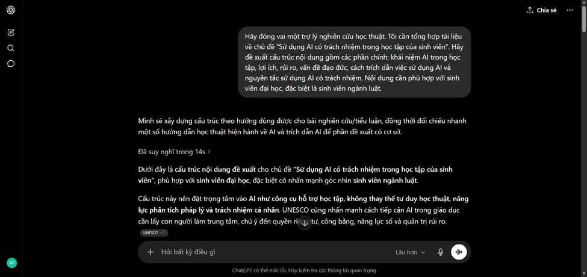
Bước 2 / 6
Đầu ra cấu trúc của ChatGPT
Kết quả đề xuất 6 phần chính rõ ràng của ChatGPT, làm nền tảng phát triển nội dung bài luận.
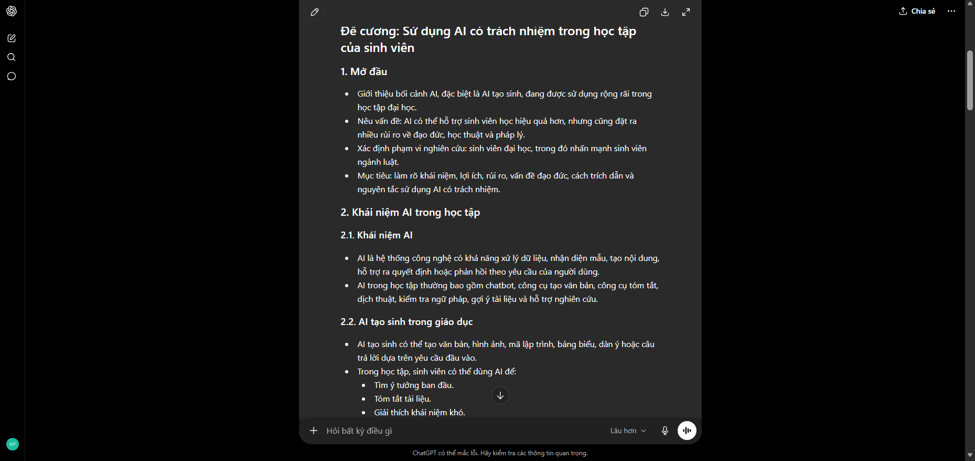
Bước 3 / 6
Hỏi đáp về Lợi ích & Rủi ro
Yêu cầu ChatGPT chỉ rõ các nguy cơ phụ thuộc công cụ và tính sai lệch thông tin ảnh hưởng trực tiếp đến người học luật.
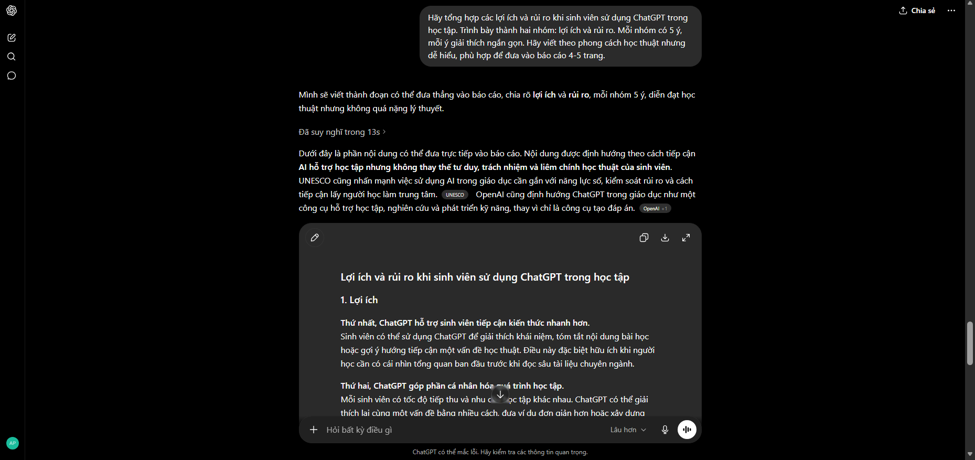
Bước 4 / 6
Phân tích các Vấn đề Đạo đức
ChatGPT phân tích sâu về ranh giới gian lận học thuật, liêm chính trong trích dẫn và tác động tới phát triển kỹ năng tự học.
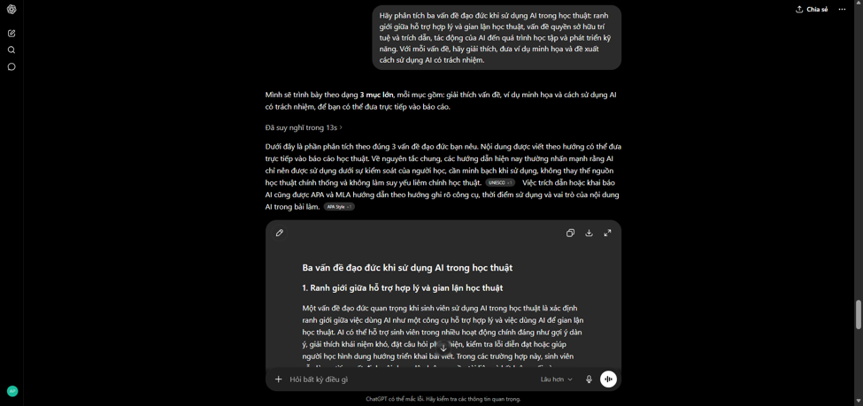
Bước 5 / 6
Gợi ý 7 nguyên tắc cá nhân
AI đề xuất bản nháp bộ quy tắc liêm chính khoa học, sau đó được người học chỉnh sửa biên tập lại theo ngôn từ cá nhân.
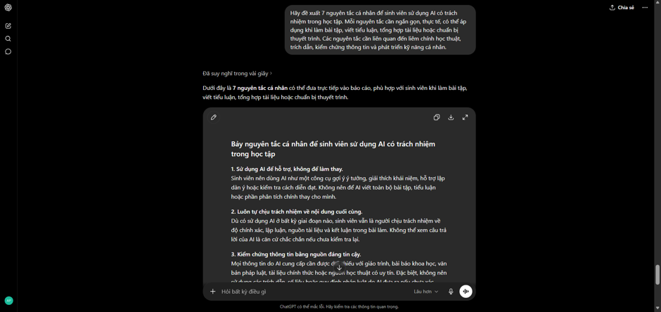
Bước 6 / 6
Cấu trúc nội dung Infographic
Yêu cầu ChatGPT tối ưu hóa câu chữ ngắn gọn dạng Nên làm/Không nên làm để chèn vào infographic tuyên truyền.
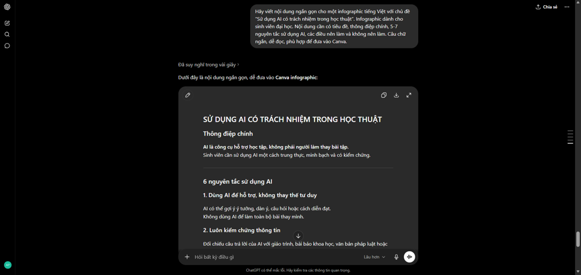
Dưới đây là chi tiết các câu lệnh (prompt) đã sử dụng và đánh giá quá trình:
Prompt 1: Yêu cầu AI đề xuất cấu trúc tổng hợp tài liệu
Prompt đã sử dụng:
Hãy đóng vai một trợ lý nghiên cứu học thuật. Tôi cần tổng hợp tài liệu về chủ đề “Sử dụng AI có trách nhiệm trong học tập của sinh viên”. Hãy đề xuất cấu trúc nội dung gồm các phần chính: khái niệm AI trong học tập, lợi ích, rủi ro, vấn đề đạo đức, cách trích dẫn việc sử dụng AI và nguyên tắc sử dụng AI có trách nhiệm. Nội dung cần phù hợp với sinh viên đại học, đặc biệt là sinh viên ngành luật.
Đầu ra AI nhận được: ChatGPT đề xuất cấu trúc gồm 6 phần: khái niệm AI trong học tập, lợi ích của AI, rủi ro khi sử dụng AI, các vấn đề đạo đức, cách ghi nhận việc sử dụng AI và bộ nguyên tắc sử dụng AI có trách nhiệm. AI cũng gợi ý nên nhấn mạnh các vấn đề như gian lận học thuật, đạo văn, quyền sở hữu trí tuệ, tính chính xác của thông tin và sự phụ thuộc vào công cụ.
Đánh giá đầu ra: Đầu ra của AI có cấu trúc rõ ràng, phù hợp với yêu cầu đề bài. Tuy nhiên, nội dung còn ở mức khái quát, chưa gắn nhiều với bối cảnh của Đại học Luật Đại học quốc gia Hà Nội và đặc thù ngành luật. Vì vậy, em chỉ sử dụng cấu trúc này làm khung ban đầu, sau đó bổ sung thêm phần phân tích chính sách của trường và ví dụ liên quan đến học tập pháp lý.
Cách chỉnh sửa và tích hợp: Em giữ lại 5 nhóm nội dung chính: lợi ích, rủi ro, đạo đức, trích dẫn minh bạch và nguyên tắc cá nhân. Sau đó, em sắp xếp lại để phù hợp với bố cục báo cáo. Em cũng bổ sung nhận định cá nhân rằng sinh viên luật không nên dùng AI để thay thế việc đọc văn bản pháp luật, án lệ, giáo trình và tài liệu học thuật.
Prompt 2: Yêu cầu AI tổng hợp lợi ích và rủi ro
Prompt đã sử dụng:
Hãy tổng hợp các lợi ích và rủi ro khi sinh viên sử dụng ChatGPT trong học tập. Trình bày thành hai nhóm: lợi ích và rủi ro. Mỗi nhóm có 5 ý, mỗi ý giải thích ngắn gọn. Hãy viết theo phong cách học thuật nhưng dễ hiểu, phù hợp để đưa vào báo cáo 4-5 trang.
Đầu ra AI nhận được: ChatGPT nêu các lợi ích như: hỗ trợ tìm ý tưởng, giải thích khái niệm khó, tóm tắt tài liệu, cải thiện diễn đạt và hỗ trợ tự học. Các rủi ro gồm: thông tin sai lệch, phụ thuộc vào AI, giảm tư duy phản biện, nguy cơ đạo văn và thiếu minh bạch khi sử dụng.
Đánh giá đầu ra: Phần lợi ích và rủi ro khá đầy đủ, nhưng một số ý còn chung chung. Ví dụ, AI chỉ nêu “thông tin có thể sai” nhưng chưa giải thích rõ trong ngành luật, sai thông tin có thể dẫn đến việc hiểu nhầm quy định pháp luật hoặc áp dụng sai căn cứ. Vì vậy, em đã chỉnh sửa để làm rõ hơn trong bối cảnh sinh viên luật.
Cách chỉnh sửa và tích hợp: Em chỉnh nội dung theo hướng cụ thể hơn. Ví dụ: Ý AI đưa ra: “AI có thể cung cấp thông tin sai.” -> Em chỉnh thành: “Trong học tập pháp luật, AI có thể nhầm lẫn văn bản pháp luật, hiệu lực văn bản hoặc nội dung điều luật. Vì vậy, sinh viên phải kiểm chứng bằng nguồn chính thống.” Nhờ vậy, nội dung báo cáo phù hợp hơn với ngành học và thể hiện được sự đánh giá cá nhân thay vì chỉ sao chép đầu ra AI.
Prompt 3: Yêu cầu AI phân tích vấn đề đạo đức
Prompt đã sử dụng:
Hãy phân tích ba vấn đề đạo đức khi sử dụng AI trong học thuật: ranh giới giữa hỗ trợ hợp lý và gian lận học thuật, vấn đề quyền sở hữu trí tuệ và trích dẫn, tác động của AI đến quá trình học tập và phát triển kỹ năng. Với mỗi vấn đề, hãy giải thích, đưa ví dụ minh họa và đề xuất cách sử dụng AI có trách nhiệm.
Đầu ra AI nhận được: ChatGPT phân tích ba vấn đề chính. Đối với ranh giới giữa hỗ trợ và gian lận, AI cho rằng việc dùng AI để gợi ý ý tưởng là hợp lý, nhưng nộp nguyên văn bài do AI viết là gian lận. Đối với quyền sở hữu trí tuệ, AI nhấn mạnh cần ghi nhận nguồn và tránh sao chép. Đối với phát triển kỹ năng, AI cho rằng phụ thuộc vào AI có thể làm giảm khả năng tự học, tự viết và tư duy phản biện.
Đánh giá đầu ra: Đầu ra phù hợp với yêu cầu đề bài, có thể sử dụng làm nền cho phần phân tích đạo đức. Tuy nhiên, một số ví dụ còn đơn giản. Em đã bổ sung thêm ví dụ cụ thể, chẳng hạn như sinh viên dùng AI để viết toàn bộ bài tiểu luận luật mà không đọc văn bản pháp luật gốc, hoặc dùng AI để tạo trích dẫn giả.
Cách chỉnh sửa và tích hợp: Em dùng các ý chính của AI, sau đó viết lại theo cách diễn đạt cá nhân. Em bổ sung liên hệ với việc học luật, trong đó người học cần năng lực đọc hiểu văn bản, lập luận pháp lý, xác định căn cứ và đánh giá tình huống. Những năng lực này không thể giao hoàn toàn cho AI.
Prompt 4: Yêu cầu AI đề xuất bộ nguyên tắc cá nhân
Prompt đã sử dụng:
Hãy đề xuất 7 nguyên tắc cá nhân để sinh viên sử dụng AI có trách nhiệm trong học tập. Mỗi nguyên tắc cần ngắn gọn, thực tế, có thể áp dụng khi làm bài tập, viết tiểu luận, tổng hợp tài liệu hoặc chuẩn bị thuyết trình. Các nguyên tắc cần liên quan đến liêm chính học thuật, trích dẫn, kiểm chứng thông tin và phát triển kỹ năng cá nhân.
Đầu ra AI nhận được: ChatGPT đề xuất các nguyên tắc như: không nộp nguyên văn nội dung AI, kiểm chứng thông tin, ghi nhận việc sử dụng AI, không dùng AI để gian lận, bảo vệ dữ liệu cá nhân, dùng AI để học chứ không dùng để thay thế tư duy và tuân thủ quy định của giảng viên.
Đánh giá đầu ra: Các nguyên tắc khá phù hợp, nhưng cần diễn đạt lại để rõ ràng và có tính cá nhân hơn. Một số nguyên tắc còn trùng ý, vì vậy em đã gộp lại và sắp xếp thành 7 nguyên tắc hoàn chỉnh.
Cách chỉnh sửa và tích hợp: Em viết lại bộ nguyên tắc bằng ngôn ngữ của bản thân, đồng thời liên kết từng nguyên tắc với các vấn đề đạo đức đã phân tích. Ví dụ, nguyên tắc “Không nộp nguyên văn sản phẩm AI” liên quan đến vấn đề gian lận học thuật; nguyên tắc “Kiểm chứng thông tin từ nguồn chính thống” liên quan đến độ chính xác; nguyên tắc “Ghi nhận việc sử dụng AI” liên quan đến minh bạch học thuật.
Prompt 5: Yêu cầu AI hỗ trợ nội dung infographic
Prompt đã sử dụng:
Hãy viết nội dung ngắn gọn cho một infographic tiếng Việt với chủ đề “Sử dụng AI có trách nhiệm trong học thuật”. Infographic dành cho sinh viên đại học. Nội dung cần có tiêu đề, thông điệp chính, 5-7 nguyên tắc sử dụng AI, các điều nên làm và không nên làm. Câu chữ ngắn, dễ đọc, phù hợp để đưa vào Canva.
Đầu ra AI nhận được: ChatGPT đề xuất tiêu đề “Sử dụng AI có trách nhiệm trong học thuật”, thông điệp chính “AI là công cụ hỗ trợ, không thay thế tư duy của người học”, cùng các nguyên tắc như kiểm chứng thông tin, không sao chép nguyên văn, ghi nhận việc sử dụng AI, bảo vệ dữ liệu cá nhân và tuân thủ quy định học thuật.
Đánh giá đầu ra: Đầu ra phù hợp để thiết kế infographic, nhưng còn hơi dài. Em đã rút gọn lại thành các câu ngắn, dễ đọc và có thể đặt trong các khối nội dung nhỏ trên infographic.
IV. Bản tổng hợp tài liệu sau khi chỉnh sửa
Sau khi sử dụng ChatGPT và chỉnh sửa lại, em hoàn thiện bản tổng hợp tài liệu như sau:
AI trong học tập là việc sử dụng các công cụ trí tuệ nhân tạo để hỗ trợ quá trình tiếp nhận, xử lý và trình bày tri thức. Đối với sinh viên, AI có thể hỗ trợ nhiều hoạt động như tìm ý tưởng, lập dàn ý, tóm tắt tài liệu, giải thích khái niệm khó, dịch thuật, luyện tập câu hỏi và cải thiện cách diễn đạt. Nếu được sử dụng hợp lý, AI có thể giúp sinh viên tiết kiệm thời gian và học tập chủ động hơn.
Tuy nhiên, AI cũng đặt ra nhiều rủi ro. Trước hết, AI có thể tạo ra thông tin sai hoặc thiếu chính xác. Đối với sinh viên luật, điều này đặc biệt nguy hiểm vì việc hiểu sai văn bản pháp luật, điều luật hoặc nguyên tắc pháp lý có thể ảnh hưởng trực tiếp đến chất lượng bài làm. Thứ hai, sinh viên có thể trở nên phụ thuộc vào AI, giảm khả năng đọc tài liệu gốc, tự lập luận và tự viết. Thứ ba, nếu sử dụng AI để tạo toàn bộ bài làm rồi nộp như sản phẩm cá nhân, sinh viên có thể vi phạm liêm chính học thuật.
Việc sử dụng AI có trách nhiệm đòi hỏi người học phải hiểu rõ ranh giới giữa hỗ trợ và gian lận. AI có thể được dùng để gợi ý hướng tiếp cận, giải thích khái niệm hoặc kiểm tra lỗi diễn đạt. Tuy nhiên, AI không nên được dùng để thay thế hoàn toàn quá trình tư duy, phân tích và viết bài của sinh viên. Người học cần kiểm chứng thông tin từ giáo trình, văn bản pháp luật, tài liệu khoa học và nguồn chính thống.
Ngoài ra, việc sử dụng AI cần minh bạch. Nếu AI có hỗ trợ đáng kể trong quá trình làm bài, sinh viên nên ghi nhận điều đó trong báo cáo hoặc phần chú thích. Ví dụ: “Báo cáo có sử dụng ChatGPT để hỗ trợ lập dàn ý và gợi ý nội dung ban đầu. Người viết đã kiểm tra, chỉnh sửa và chịu trách nhiệm về toàn bộ nội dung cuối cùng.” Cách ghi nhận này giúp thể hiện sự trung thực và trách nhiệm học thuật.
Tóm lại, AI là một công cụ hữu ích nhưng không thay thế vai trò của con người. Giá trị thật sự của việc học nằm ở quá trình sinh viên tự đọc, tự hiểu, tự phân tích và hình thành quan điểm cá nhân. AI chỉ nên đóng vai trò hỗ trợ, còn người học phải chịu trách nhiệm cuối cùng với sản phẩm học thuật của mình.
V. Trích dẫn việc sử dụng AI một cách minh bạch
Trong quá trình thực hiện báo cáo này, em đã sử dụng ChatGPT để hỗ trợ các công việc sau:
Gợi ý cấu trúc tổng hợp tài liệu.
Đề xuất các lợi ích và rủi ro khi sử dụng AI trong học tập.
Gợi ý các vấn đề đạo đức liên quan đến AI trong học thuật.
Đề xuất bộ nguyên tắc cá nhân về sử dụng AI có trách nhiệm.
Hỗ trợ viết nội dung ngắn gọn cho infographic.
Tuy nhiên, em không sử dụng nguyên văn toàn bộ nội dung do AI tạo ra. Các đầu ra của AI đã được em đọc lại, đánh giá, chỉnh sửa, bổ sung ví dụ và liên hệ với bối cảnh học tập tại Đại học Luật Đại học quốc gia Hà Nội. Em chịu trách nhiệm với nội dung cuối cùng của báo cáo.
Câu trích dẫn việc sử dụng AI:
Báo cáo này có sử dụng ChatGPT để hỗ trợ lập dàn ý, gợi ý nội dung ban đầu và đề xuất cách trình bày. Người viết đã kiểm chứng, chỉnh sửa, bổ sung quan điểm cá nhân và chịu trách nhiệm đối với toàn bộ nội dung cuối cùng.
VI. Phân tích các vấn đề đạo đức khi sử dụng AI trong học thuật
1. Ranh giới giữa hỗ trợ hợp lý và gian lận học thuật
Vấn đề đạo đức đầu tiên là xác định ranh giới giữa việc sử dụng AI như một công cụ hỗ trợ và việc lạm dụng AI để gian lận học thuật. Trong học tập, không phải mọi hành vi sử dụng AI đều sai. Nếu sinh viên dùng AI để tìm ý tưởng, lập dàn ý, giải thích khái niệm khó hoặc kiểm tra lỗi diễn đạt, đó có thể được xem là hỗ trợ hợp lý. Trong trường hợp này, AI đóng vai trò giống như một công cụ học tập giúp người học hiểu vấn đề nhanh hơn.
Tuy nhiên, nếu sinh viên yêu cầu AI viết toàn bộ bài luận, tiểu luận hoặc báo cáo rồi nộp như sản phẩm của mình, hành vi đó có thể bị xem là gian lận học thuật. Bản chất của học tập là người học phải tự tìm hiểu, tư duy, phân tích và trình bày quan điểm. Khi AI làm thay toàn bộ quá trình này, sinh viên không còn thể hiện năng lực thật của bản thân.
Ví dụ, trong một bài tiểu luận luật, sinh viên có thể hỏi AI: “Hãy gợi ý các vấn đề pháp lý cần phân tích trong tranh chấp hợp đồng.” Đây là cách dùng hợp lý vì sinh viên vẫn phải tự đọc luật và tự phân tích. Nhưng nếu sinh viên yêu cầu AI: “Hãy viết toàn bộ bài tiểu luận 3000 từ về tranh chấp hợp đồng để tôi nộp”, sau đó nộp nguyên văn, thì đó là hành vi không trung thực.
Vì vậy, ranh giới quan trọng nằm ở mức độ kiểm soát của người học. Nếu AI chỉ hỗ trợ một phần và sinh viên vẫn là người phân tích, chỉnh sửa, kiểm chứng và chịu trách nhiệm, việc sử dụng AI có thể chấp nhận được. Ngược lại, nếu AI thay thế toàn bộ tư duy và công sức của người học, việc sử dụng AI trở thành gian lận.
2. Quyền sở hữu trí tuệ, trích dẫn và minh bạch học thuật
Vấn đề đạo đức thứ hai là quyền sở hữu trí tuệ và trích dẫn. Khi sử dụng AI, sinh viên dễ nhầm tưởng rằng nội dung do AI tạo ra là “miễn phí” và có thể dùng tùy ý. Tuy nhiên, trong môi trường học thuật, mọi thông tin, ý tưởng và nội dung được sử dụng đều cần được xem xét về nguồn gốc, độ tin cậy và cách ghi nhận.
AI có thể tổng hợp thông tin từ nhiều nguồn khác nhau, nhưng không phải lúc nào cũng chỉ rõ nguồn. Thậm chí, AI có thể tạo ra trích dẫn không có thật hoặc thông tin nghe có vẻ hợp lý nhưng sai. Nếu sinh viên sử dụng các thông tin đó mà không kiểm tra, bài làm có thể mắc lỗi nghiêm trọng.
Đối với ngành luật, yêu cầu trích dẫn càng quan trọng. Khi phân tích một vấn đề pháp lý, sinh viên cần dựa vào văn bản pháp luật, giáo trình, án lệ, bài nghiên cứu hoặc tài liệu chính thống. AI không thể thay thế việc tra cứu nguồn gốc pháp lý. Nếu AI đưa ra một điều luật, sinh viên phải kiểm tra lại văn bản gốc để bảo đảm đúng nội dung và hiệu lực.
Minh bạch học thuật cũng là một yêu cầu cần thiết. Nếu AI hỗ trợ đáng kể trong quá trình làm bài, sinh viên nên ghi nhận việc sử dụng AI. Việc ghi nhận không làm giảm giá trị bài làm, mà thể hiện sự trung thực và ý thức trách nhiệm. Ngược lại, che giấu việc sử dụng AI trong khi AI đóng góp phần lớn vào sản phẩm có thể tạo ra sự thiếu minh bạch.
3. Tác động đến quá trình học tập và phát triển kỹ năng
Vấn đề đạo đức thứ ba là tác động của AI đến quá trình học tập và phát triển kỹ năng. AI có thể giúp sinh viên học nhanh hơn, nhưng cũng có thể làm sinh viên học thụ động hơn nếu lạm dụng. Khi quá phụ thuộc vào AI, sinh viên có thể mất dần khả năng tự đọc, tự viết, tự lập luận và tự giải quyết vấn đề.
Trong học tập ngành luật, các kỹ năng quan trọng không chỉ là ghi nhớ kiến thức mà còn là đọc hiểu văn bản, phân tích tình huống, xác định vấn đề pháp lý, lập luận logic và bảo vệ quan điểm. Những kỹ năng này chỉ hình thành thông qua quá trình tự học và luyện tập. Nếu sinh viên dùng AI để làm thay mọi bước, sinh viên có thể hoàn thành bài nhanh hơn nhưng không thật sự phát triển năng lực.
Ví dụ, khi chuẩn bị một bài thuyết trình, sinh viên có thể dùng AI để gợi ý dàn ý. Tuy nhiên, sinh viên vẫn cần tự hiểu nội dung, tự chọn ví dụ, tự luyện cách trình bày và tự trả lời câu hỏi. Nếu chỉ đọc lại nội dung AI tạo ra mà không hiểu, sinh viên sẽ gặp khó khăn khi được giảng viên hoặc bạn học đặt câu hỏi.
Do đó, AI nên được sử dụng như một công cụ hỗ trợ phát triển kỹ năng, không phải công cụ thay thế kỹ năng. Một cách sử dụng tốt là yêu cầu AI giải thích khái niệm, sau đó tự viết lại bằng ngôn ngữ của mình. Cách này giúp người học vừa tận dụng được AI vừa duy trì quá trình tư duy cá nhân.
VII. Bộ nguyên tắc cá nhân về sử dụng AI có trách nhiệm trong học tập
Dựa trên các phân tích trên, em xây dựng bộ 7 nguyên tắc cá nhân khi sử dụng AI trong học tập như sau:
01
Không để AI làm thay
Chỉ dùng AI để hỗ trợ tìm ý tưởng, dàn ý hoặc kiểm tra lỗi hành văn. Tuyệt đối không nộp nguyên văn bài AI viết.
02
Luôn kiểm chứng nguồn tin
Mọi điều luật, án lệ hoặc lý thuyết do AI đưa ra phải được đối chiếu lại bằng văn bản quy phạm pháp luật gốc.
03
Khai báo minh bạch
Ghi nhận rõ ràng các công cụ AI đã hỗ trợ và phạm vi hỗ trợ của chúng trong phần phụ lục sản phẩm nghiên cứu.
04
Nói không với gian lận
Tuyệt đối không dùng AI trong phòng thi hoặc các bài kiểm tra trực tuyến khi không được sự đồng ý từ giảng viên.
05
Bảo mật thông tin
Không nhập dữ liệu cá nhân, thông tin riêng tư của người khác hoặc các tài liệu chưa công bố của nhóm lên các AI công cộng.
06
Dùng AI để học sâu
Sử dụng AI giải thích các khái niệm pháp lý khó để bản thân tự hiểu sâu, chứ không phải để né tránh việc tự học.
07
Chịu trách nhiệm cuối cùng
Sản phẩm học thuật nộp đi là danh dự cá nhân. Tôi chịu trách nhiệm 100% đối với mọi lỗi sai lệch thông tin nếu có.
Chi tiết thuyết minh các nguyên tắc:
Nguyên tắc 1: Không dùng AI để làm thay toàn bộ bài tập
Em chỉ sử dụng AI để hỗ trợ tìm ý tưởng, lập dàn ý, giải thích khái niệm hoặc kiểm tra diễn đạt. Em không nộp nguyên văn bài viết do AI tạo ra như sản phẩm cá nhân của mình.
Nguyên tắc 2: Luôn kiểm chứng thông tin từ nguồn đáng tin cậy
Mọi thông tin do AI cung cấp cần được kiểm tra lại bằng giáo trình, văn bản pháp luật, tài liệu khoa học hoặc nguồn chính thống. Đặc biệt trong ngành luật, không sử dụng điều luật, án lệ hoặc khái niệm pháp lý do AI đưa ra nếu chưa kiểm chứng.
Nguyên tắc 3: Ghi nhận việc sử dụng AI khi AI hỗ trợ đáng kể
Nếu AI được sử dụng trong quá trình lập dàn ý, tổng hợp nội dung hoặc chỉnh sửa bài viết, em sẽ ghi rõ trong báo cáo hoặc phần chú thích. Việc ghi nhận này thể hiện sự minh bạch và trung thực học thuật.
Nguyên tắc 4: Không sử dụng AI để gian lận trong kiểm tra, thi cử
Em không sử dụng AI trong các bài kiểm tra, bài thi hoặc nhiệm vụ học tập mà giảng viên không cho phép. Khi chưa rõ có được dùng AI hay không, em sẽ hỏi giảng viên trước.
Nguyên tắc 5: Bảo vệ dữ liệu cá nhân và thông tin nhạy cảm
Khi dùng AI, em không nhập thông tin cá nhân, dữ liệu riêng tư, tài liệu nội bộ hoặc nội dung chưa được phép chia sẻ. Điều này giúp tránh rủi ro về bảo mật và quyền riêng tư.
Nguyên tắc 6: Dùng AI để học tốt hơn, không dùng AI để né tránh việc học
Mục tiêu sử dụng AI là giúp em hiểu bài sâu hơn, học hiệu quả hơn và phát triển kỹ năng tốt hơn. Em không dùng AI như cách để bỏ qua việc đọc tài liệu, suy nghĩ và tự luyện tập.
Nguyên tắc 7: Chịu trách nhiệm cuối cùng với sản phẩm học thuật
Dù có sử dụng AI hỗ trợ, em vẫn là người chịu trách nhiệm cuối cùng về nội dung, lập luận, nguồn trích dẫn và chất lượng bài làm. Nếu bài làm có lỗi sai, em không đổ lỗi cho AI mà phải tự kiểm tra và chỉnh sửa trước khi nộp.
VIII. Nội dung infographic: “Sử dụng AI có trách nhiệm trong học thuật”
1. Tiêu đề infographic
SỬ DỤNG AI CÓ TRÁCH NHIỆM TRONG HỌC THUẬT
2. Thông điệp chính
AI là công cụ hỗ trợ học tập, không thay thế tư duy và trách nhiệm của sinh viên.
3. Nội dung chính đưa vào infographic
Nên làm
Dùng AI để gợi ý ý tưởng và lập dàn ý.
Kiểm chứng thông tin từ nguồn chính thống.
Chỉnh sửa nội dung bằng hiểu biết cá nhân.
Ghi nhận việc sử dụng AI khi cần thiết.
Dùng AI để học sâu hơn và luyện tư duy phản biện.
Không nên làm
Không nộp nguyên văn bài do AI viết.
Không dùng AI để gian lận thi cử.
Không tin hoàn toàn vào câu trả lời của AI.
Không tạo trích dẫn giả hoặc nguồn không có thật.
Không nhập dữ liệu cá nhân hoặc tài liệu nhạy cảm.
7 nguyên tắc ngắn gọn
AI hỗ trợ, không làm thay.
Luôn kiểm chứng thông tin.
Không sao chép nguyên văn.
Minh bạch khi sử dụng AI.
Tôn trọng trích dẫn và bản quyền.
Bảo vệ dữ liệu cá nhân.
Chịu trách nhiệm với bài làm cuối cùng.
4. Gợi ý thiết kế infographic
Infographic nên được thiết kế theo bố cục ngang, gồm 4 phần: Phần đầu (tiêu đề lớn và thông điệp chính), Phần giữa (chia hai cột “Nên làm” và “Không nên làm”), Phần tiếp theo (7 nguyên tắc sử dụng AI có trách nhiệm), và Phần cuối (câu kết luận ngắn).
Màu sắc nên dùng: xanh dương, trắng, tím nhạt hoặc xanh lá nhạt để tạo cảm giác hiện đại, học thuật và đáng tin cậy. Nên sử dụng các biểu tượng như: não bộ, robot AI, quyển sách, dấu kiểm, kính lúp, chiếc khiên bảo mật và biểu tượng trích dẫn.
Ấn phẩm Infographic Tuyên truyền Đạo đức AI
1. Quá trình thiết kế nháp
🔍 Bấm để phóng to
2. Ấn phẩm Infographic hoàn chỉnh
🔍 Bấm để phóng to
IX. Đánh giá vai trò của AI trong quá trình thực hiện bài
Trong quá trình thực hiện bài báo cáo này, AI đóng vai trò là công cụ hỗ trợ học tập hữu ích. ChatGPT giúp em nhanh chóng hình thành cấu trúc nội dung, gợi ý các vấn đề cần phân tích và đề xuất cách trình bày. Nhờ đó, quá trình làm bài trở nên có hệ thống hơn và tiết kiệm thời gian hơn.
Tuy nhiên, AI không thể thay thế hoàn toàn vai trò của người học. Các câu trả lời của AI đôi khi còn chung chung, thiếu liên hệ với bối cảnh cụ thể của Đại học Luật Đại học quốc gia Hà Nội và đặc thù ngành luật. Vì vậy, em phải tự kiểm tra, chỉnh sửa và bổ sung nội dung. Đặc biệt, đối với phần chính sách của trường, em cần tra cứu các nguồn công khai và tự đưa ra nhận định thay vì chỉ dựa vào AI.
Qua quá trình này, em nhận thấy kỹ năng quan trọng nhất khi sử dụng AI không chỉ là biết nhập prompt, mà còn là biết đánh giá đầu ra. Người học cần phân biệt đâu là gợi ý có thể sử dụng, đâu là thông tin cần kiểm chứng và đâu là nội dung cần loại bỏ. Nếu không có tư duy phản biện, người học rất dễ phụ thuộc vào AI hoặc sử dụng thông tin sai.
AI đã thay đổi cách em thực hiện nhiệm vụ học tập theo hướng nhanh hơn và có tổ chức hơn. Thay vì bắt đầu từ một trang trắng, em có thể dùng AI để tạo khung ban đầu. Tuy nhiên, phần quyết định vẫn thuộc về người học: chọn thông tin nào, sửa như thế nào, bổ sung ví dụ gì và trình bày quan điểm ra sao. Vì vậy, AI nên được xem là một trợ lý học tập, không phải người làm bài thay sinh viên.
X. Kết luận
Sử dụng AI trong học tập là một xu hướng không thể tránh khỏi trong giáo dục đại học hiện nay. AI có thể hỗ trợ sinh viên học tập hiệu quả hơn, đặc biệt trong việc tìm ý tưởng, tóm tắt tài liệu, giải thích khái niệm và cải thiện cách trình bày. Tuy nhiên, AI cũng đặt ra nhiều vấn đề đạo đức như gian lận học thuật, đạo văn, thiếu minh bạch, sai lệch thông tin và suy giảm kỹ năng cá nhân.
Đối với sinh viên Đại học Luật Đại học quốc gia Hà Nội, việc sử dụng AI cần gắn với tinh thần liêm chính học thuật, trách nhiệm cá nhân và khả năng kiểm chứng thông tin. Sinh viên luật không chỉ cần câu trả lời nhanh, mà cần lập luận chính xác, căn cứ đáng tin cậy và tư duy phản biện. AI có thể hỗ trợ quá trình này, nhưng không thể thay thế hoàn toàn vai trò của người học.
Qua bài báo cáo, em rút ra rằng sử dụng AI có trách nhiệm nghĩa là biết tận dụng lợi ích của AI nhưng không phụ thuộc vào AI; biết dùng AI để học tốt hơn nhưng không dùng AI để gian lận; biết ghi nhận sự hỗ trợ của AI và chịu trách nhiệm với sản phẩm cuối cùng. Đây là kỹ năng quan trọng mà sinh viên cần rèn luyện trong bối cảnh học tập và nghiên cứu hiện đại.
XI. Tài liệu tham khảo
Đại học Quốc gia Hà Nội, Hướng dẫn số 2383/HD-ĐHQGHN về thực hiện việc trích dẫn trong các ấn phẩm khoa học tại ĐHQGHN.
Đại học Quốc gia Hà Nội, thông tin về học phần “Nhập môn công nghệ số và ứng dụng trí tuệ nhân tạo”.
Đại học Luật Đại học quốc gia Hà Nội, Chiến lược phát triển khoa học, công nghệ và đổi mới sáng tạo đến năm 2030, tầm nhìn đến năm 2045.
Đại học Luật Đại học quốc gia Hà Nội, thông tin về tọa đàm/diễn đàn liên quan đến đạo đức trí tuệ nhân tạo và giới hạn của AI.
Đại học Kinh tế Thành phố Hồ Chí Minh, quy định về kiểm soát đạo văn và sử dụng AI trong các sản phẩm học thuật.
Trường Đại học Nha Trang, quy định về kiểm soát đạo văn và sử dụng trí tuệ nhân tạo trong sản phẩm học thuật.
RMIT Việt Nam, nội dung về liêm chính học thuật và sử dụng AI trong học tập.
Góc nhìn cá nhân
Tổng kết & Cảm nghĩ
Trải nghiệm hành trình làm dự án
Quá trình xây dựng Portfolio này thực sự là một trải nghiệm có giá trị lớn đối với tôi. Môn học **Nhập môn Công nghệ số và Ứng dụng Trí tuệ nhân tạo** đã giúp một sinh viên ngành Luật vốn quen thuộc với các trang văn bản và sách lý thuyết có cơ hội tiếp xúc sâu hơn với thế giới công nghệ số.
Việc tập hợp và trình bày lại 6 bài tập thành phần giúp tôi nhìn nhận rõ sự tiến bộ của bản thân qua từng giai đoạn học tập. Việc ứng dụng công nghệ không làm giảm đi tính chất chuyên sâu của ngành luật, mà ngược lại, nó là đòn bẩy giúp cho việc nghiên cứu và áp dụng pháp luật của tôi trở nên năng suất, chính xác và chuyên nghiệp hơn rất nhiều.
Bài học lớn nhất đạt được
✦
Kỹ năng Prompting: Giúp tối ưu hóa hàng giờ tìm kiếm thông tin bằng cách đặt câu hỏi cấu trúc thông minh.
✦
Ý thức Đạo đức AI: Hiểu rõ tầm quan trọng của việc kiểm chứng nguồn tin gốc để tránh lỗi ngộ nhận (Hallucination) từ AI.
✦
Quản lý dự án: Làm việc nhóm khoa học hơn nhờ vào Kanban và hệ thống quản lý số hóa dữ liệu.